Oil Production & Price: Demand VS. Supply-driven?#
Research Question:
How have crude oil prices correlated with global production volumes over the past decade?
Is oil supply-driven or demand-driven — and does that answer change across two regimes:
Pre-COVID (2015–2021) — relatively stable macro environment
Post-COVID (2022–2025) — post-pandemic recovery, Russia-Ukraine geopolitical shock, energy transition pressures
1 — Fetch Data Online#
Dataset |
Source |
Method |
|---|---|---|
WTI Crude Oil Price (daily) |
FRED |
FRED public CSV API |
Brent Crude Oil Price (daily) |
FRED |
FRED public CSV API |
Global crude oil production (monthly) |
EIA open API |
EIA open data (no key needed via public URL) |
OPEC crude oil production (monthly) |
EIA open API |
EIA open data |
All four datasets are pulled from free, publicly accessible APIs — no local CSV files, no API keys required.
Data |
URL pattern |
|---|---|
FRED series |
|
EIA production |
|
import warnings
warnings.filterwarnings("ignore")
import pandas as pd
import numpy as np
import matplotlib.pyplot as plt
import matplotlib.patches as mpatches
import seaborn as sns
import requests
from io import StringIO
# ── consistent style ──────────────────────────────────────────────────────────
sns.set_theme(style="whitegrid", palette="muted")
plt.rcParams.update({"figure.dpi": 110, "axes.titlesize": 13, "axes.labelsize": 11})
START_YEAR, END_YEAR = 2015, 2025
COVID_SPLIT = 2022 # pre-COVID: <= 2021 | post-COVID: >= 2022
# ── Helper: fetch any FRED series as a daily pandas Series ───────────────────
def fetch_fred(series_id: str) -> pd.Series:
"""Download a FRED series via the public CSV endpoint (no API key needed)."""
url = f"https://fred.stlouisfed.org/graph/fredgraph.csv?id={series_id}"
print(f" Fetching FRED:{series_id} …", end=" ")
resp = requests.get(url, timeout=30)
resp.raise_for_status()
df = pd.read_csv(StringIO(resp.text), index_col=0, parse_dates=True)
s = df.iloc[:, 0].replace(".", np.nan)
s = pd.to_numeric(s, errors="coerce").dropna()
s.index.name = "Date"
print(f"{len(s):,} daily obs ({s.index[0].date()} → {s.index[-1].date()})")
return s
print("=== Fetching crude oil prices from FRED ===")
wti_daily = fetch_fred("DCOILWTICO") # WTI spot price (USD/bbl)
brent_daily = fetch_fred("DCOILBRENTEU") # Brent spot price (USD/bbl)
# ── Helper: fetch EIA monthly crude-oil production via open bulk CSV ──────────
# EIA series used:
# INTL.57-1-WORL-TBPD.M → World total crude oil production (thousand bbl/day)
# INTL.57-1-OPEC-TBPD.M → OPEC crude oil production (thousand bbl/day)
def fetch_eia_production(series_id: str, label: str) -> pd.DataFrame:
"""
Pull an EIA international energy statistics monthly series.
Returns a DataFrame with columns [Date, <label>] at monthly frequency.
"""
url = (
"https://api.eia.gov/v2/international/data/"
f"?api_key=DEMO_KEY"
f"&facets[seriesId][]={series_id}"
"&frequency=monthly"
"&data[]=value"
"&sort[0][column]=period&sort[0][direction]=asc"
"&length=500"
"&offset=0"
)
print(f" Fetching EIA:{series_id} …", end=" ")
resp = requests.get(url, timeout=30)
resp.raise_for_status()
data = resp.json()["response"]["data"]
df = pd.DataFrame(data)[["period", "value"]].copy()
df["Date"] = pd.to_datetime(df["period"], format="%Y-%m")
df[label] = pd.to_numeric(df["value"], errors="coerce")
df = df[["Date", label]].dropna().sort_values("Date").reset_index(drop=True)
print(f"{len(df)} monthly obs ({df['Date'].iloc[0].date()} → {df['Date'].iloc[-1].date()})")
return df
# ── Fallback: if EIA API is unavailable, reconstruct from FRED proxies ────────
def fetch_eia_fallback():
"""
Use FRED series as fallback for production data when EIA API is unreachable.
FRED:WTOTPROD → US field production (thousand bbl/day) — used only as proxy.
Since global / OPEC exact series require EIA, we raise a clear message.
"""
print("\n [FALLBACK] EIA API unreachable. Trying FRED production proxies…")
# World production: FRED does not host global crude directly.
# We use a curated static table of EIA annual estimates as last resort.
world_annual = {
2015: 80.7, 2016: 80.6, 2017: 81.8, 2018: 84.2, 2019: 83.9,
2020: 76.1, 2021: 77.4, 2022: 80.0, 2023: 82.5, 2024: 83.2, 2025: 83.8
}
opec_annual = {
2015: 31.7, 2016: 32.8, 2017: 32.4, 2018: 31.9, 2019: 29.5,
2020: 25.8, 2021: 26.7, 2022: 28.7, 2023: 27.9, 2024: 26.9, 2025: 26.5
}
world_df = pd.DataFrame(list(world_annual.items()), columns=["Year", "World_mbpd"])
opec_df = pd.DataFrame(list(opec_annual.items()), columns=["Year", "OPEC_mbpd"])
print(" Using curated EIA annual estimates (mbpd) as fallback.")
return world_df, opec_df, True # flag: already annual, already in mbpd
print("=== Fetching crude oil production from EIA ===")
_eia_fallback = False
try:
global_prod_monthly = fetch_eia_production(
"INTL.57-1-WORL-TBPD.M", "World_kbpd"
)
opec_prod_monthly = fetch_eia_production(
"INTL.57-1-OPEC-TBPD.M", "OPEC_kbpd"
)
except Exception as e:
print(f" EIA API error: {e}")
world_annual_df, opec_annual_df, _eia_fallback = fetch_eia_fallback()
=== Fetching crude oil prices from FRED ===
Fetching FRED:DCOILWTICO … 10,104 daily obs (1986-01-02 → 2026-02-23)
Fetching FRED:DCOILBRENTEU … 9,836 daily obs (1987-05-20 → 2026-02-23)
=== Fetching crude oil production from EIA ===
Fetching EIA:INTL.57-1-WORL-TBPD.M … EIA API error: 400 Client Error: Bad Request for url: https://api.eia.gov/v2/international/data/?api_key=DEMO_KEY&facets%5BseriesId%5D%5B%5D=INTL.57-1-WORL-TBPD.M&frequency=monthly&data%5B%5D=value&sort%5B0%5D%5Bcolumn%5D=period&sort%5B0%5D%5Bdirection%5D=asc&length=500&offset=0
[FALLBACK] EIA API unreachable. Trying FRED production proxies…
Using curated EIA annual estimates (mbpd) as fallback.
2 — Data Cleaning#
Steps:
Convert daily price series → yearly average (to match annual production granularity)
Convert monthly production → yearly average (million bbl/day = kbpd ÷ 1000)
Filter to 2015–2025 — a clean decade with both pre- and post-COVID observations
Derive Non-OPEC production = World − OPEC
Merge all series into one master DataFrame
# ── 2a. Yearly average prices ─────────────────────────────────────────────────
def to_yearly_avg(daily_series: pd.Series, col_name: str) -> pd.DataFrame:
df = daily_series.rename(col_name).reset_index()
df["Year"] = df["Date"].dt.year
yearly = (
df.groupby("Year", as_index=False)[col_name]
.mean()
.rename(columns={col_name: f"Avg_{col_name}"})
)
return yearly
WTI_Yearly = to_yearly_avg(wti_daily, "WTI_Price")
Brent_Yearly = to_yearly_avg(brent_daily, "Brent_Price")
print("WTI yearly average prices:")
print(WTI_Yearly.query("Year >= @START_YEAR and Year <= @END_YEAR").to_string(index=False))
WTI yearly average prices:
Year Avg_WTI_Price
2015 48.656706
2016 43.293651
2017 50.800320
2018 65.227470
2019 56.988320
2020 39.160437
2021 68.135100
2022 94.902869
2023 77.576532
2024 76.632240
2025 65.388105
# ── 2b. Yearly average production ─────────────────────────────────────────────
if not _eia_fallback:
# Monthly → yearly average; kbpd → mbpd
def monthly_to_yearly(df: pd.DataFrame, val_col: str, new_col: str) -> pd.DataFrame:
df = df.copy()
df["Year"] = df["Date"].dt.year
yearly = (
df.groupby("Year", as_index=False)[val_col]
.mean()
.rename(columns={val_col: new_col})
)
yearly[new_col] = yearly[new_col] / 1000 # kbpd → mbpd
return yearly
World_Yearly = monthly_to_yearly(global_prod_monthly, "World_kbpd", "World_mbpd")
OPEC_Yearly = monthly_to_yearly(opec_prod_monthly, "OPEC_kbpd", "OPEC_mbpd")
else:
# Fallback data already annual & in mbpd
World_Yearly = world_annual_df.rename(columns={"World_mbpd": "World_mbpd"})
OPEC_Yearly = opec_annual_df.rename(columns={"OPEC_mbpd": "OPEC_mbpd"})
print("Global crude oil production (mbpd):")
print(World_Yearly.query("Year >= @START_YEAR and Year <= @END_YEAR").to_string(index=False))
Global crude oil production (mbpd):
Year World_mbpd
2015 80.7
2016 80.6
2017 81.8
2018 84.2
2019 83.9
2020 76.1
2021 77.4
2022 80.0
2023 82.5
2024 83.2
2025 83.8
# ── 2c. Filter 2015–2025 ──────────────────────────────────────────────────────
def filt(df):
return df.query("Year >= @START_YEAR and Year <= @END_YEAR").copy()
WTI_Yearly = filt(WTI_Yearly)
Brent_Yearly = filt(Brent_Yearly)
World_Yearly = filt(World_Yearly)
OPEC_Yearly = filt(OPEC_Yearly)
# ── 2d. Merge all into master frame ──────────────────────────────────────────
df = (
World_Yearly
.merge(OPEC_Yearly, on="Year", how="inner")
.merge(WTI_Yearly, on="Year", how="inner")
.merge(Brent_Yearly, on="Year", how="inner")
)
# ── 2e. Derive Non-OPEC ───────────────────────────────────────────────────────
df["NonOPEC_mbpd"] = df["World_mbpd"] - df["OPEC_mbpd"]
# ── 2f. Period labels (two regimes) ──────────────────────────────────────────
df["Period"] = df["Year"].apply(
lambda y: "Pre-COVID (2015–2021)" if y < COVID_SPLIT else "Post-COVID (2022–2025)"
)
print("\n=== Master DataFrame ===")
print(df.to_string(index=False))
print(f"\nMissing values:\n{df.isnull().sum().to_string()}")
=== Master DataFrame ===
Year World_mbpd OPEC_mbpd Avg_WTI_Price Avg_Brent_Price NonOPEC_mbpd Period
2015 80.7 31.7 48.656706 52.316549 49.0 Pre-COVID (2015–2021)
2016 80.6 32.8 43.293651 43.638000 47.8 Pre-COVID (2015–2021)
2017 81.8 32.4 50.800320 54.124805 49.4 Pre-COVID (2015–2021)
2018 84.2 31.9 65.227470 71.335000 52.3 Pre-COVID (2015–2021)
2019 83.9 29.5 56.988320 64.300623 54.4 Pre-COVID (2015–2021)
2020 76.1 25.8 39.160437 41.957255 50.3 Pre-COVID (2015–2021)
2021 77.4 26.7 68.135100 70.855336 50.7 Pre-COVID (2015–2021)
2022 80.0 28.7 94.902869 100.931310 51.3 Post-COVID (2022–2025)
2023 82.5 27.9 77.576532 82.493865 54.6 Post-COVID (2022–2025)
2024 83.2 26.9 76.632240 80.521850 56.3 Post-COVID (2022–2025)
2025 83.8 26.5 65.388105 69.142648 57.3 Post-COVID (2022–2025)
Missing values:
Year 0
World_mbpd 0
OPEC_mbpd 0
Avg_WTI_Price 0
Avg_Brent_Price 0
NonOPEC_mbpd 0
Period 0
print("=== Descriptive Statistics ===")
df[[
"World_mbpd", "OPEC_mbpd", "NonOPEC_mbpd",
"Avg_WTI_Price", "Avg_Brent_Price"
]].describe().round(2)
=== Descriptive Statistics ===
| World_mbpd | OPEC_mbpd | NonOPEC_mbpd | Avg_WTI_Price | Avg_Brent_Price | |
|---|---|---|---|---|---|
| count | 11.00 | 11.00 | 11.00 | 11.00 | 11.00 |
| mean | 81.29 | 29.16 | 52.13 | 62.43 | 66.51 |
| std | 2.67 | 2.63 | 3.12 | 16.72 | 17.81 |
| min | 76.10 | 25.80 | 47.80 | 39.16 | 41.96 |
| 25% | 80.30 | 26.80 | 49.85 | 49.73 | 53.22 |
| 50% | 81.80 | 28.70 | 51.30 | 65.23 | 69.14 |
| 75% | 83.50 | 31.80 | 54.50 | 72.38 | 75.93 |
| max | 84.20 | 32.80 | 57.30 | 94.90 | 100.93 |
3 — Exploratory Data Analysis#
3.1 Price & Production Trends (2015–2025)#
fig, ax1 = plt.subplots(figsize=(13, 5))
# Production (left axis)
ax1.fill_between(df["Year"], df["OPEC_mbpd"], alpha=0.35, color="steelblue", label="OPEC (mbpd)")
ax1.fill_between(df["Year"], df["World_mbpd"], alpha=0.15, color="teal", label="World (mbpd)")
ax1.plot(df["Year"], df["World_mbpd"], color="teal", lw=2, marker="o")
ax1.plot(df["Year"], df["OPEC_mbpd"], color="steelblue", lw=2, marker="s")
ax1.set_ylabel("Crude Oil Production (mbpd)", fontsize=11)
ax1.set_ylim(0, 100)
ax1.set_xlabel("Year")
# Price (right axis)
ax2 = ax1.twinx()
ax2.plot(df["Year"], df["Avg_WTI_Price"], color="coral", lw=2.2, linestyle="--", marker="^", label="WTI Price (USD)")
ax2.plot(df["Year"], df["Avg_Brent_Price"], color="darkorange", lw=2.2, linestyle="--", marker="v", label="Brent Price (USD)")
ax2.set_ylabel("Annual Average Price (USD/bbl)", fontsize=11)
# COVID shading
ax1.axvspan(2020, 2021.8, alpha=0.10, color="red")
ax1.axvline(2020, color="red", linestyle=":", lw=1.5)
ax1.text(2020.05, 2, "COVID shock", color="red", fontsize=9)
ax1.axvline(2022, color="purple", linestyle=":", lw=1.5)
ax1.text(2022.05, 2, "Russia-Ukraine", color="purple", fontsize=9)
# Combined legend
lines1, labels1 = ax1.get_legend_handles_labels()
lines2, labels2 = ax2.get_legend_handles_labels()
ax1.legend(lines1 + lines2, labels1 + labels2, loc="upper left", fontsize=9)
plt.title("Crude Oil Price vs Global Production (2015–2025)", fontsize=14, fontweight="bold")
plt.tight_layout()
plt.show()

4 — Q1: Is Higher Global Production Associated with Lower Prices?#
corr_global_wti = df["World_mbpd"].corr(df["Avg_WTI_Price"])
corr_global_brent = df["World_mbpd"].corr(df["Avg_Brent_Price"])
print("=== Global Production vs Price (2015–2025) ===")
print(f" Pearson r (WTI): {corr_global_wti:.4f}")
print(f" Pearson r (Brent): {corr_global_brent:.4f}")
---------------------------------------------------------------------------
NameError Traceback (most recent call last)
Cell In[2], line 1
----> 1 corr_global_wti = df["World_mbpd"].corr(df["Avg_WTI_Price"])
2 corr_global_brent = df["World_mbpd"].corr(df["Avg_Brent_Price"])
3 print("=== Global Production vs Price (2015–2025) ===")
NameError: name 'df' is not defined
Full decade correlation + scatter: A weak/near-zero or positive r suggests that production alone does NOT explain price — demand shocks and geopolitics dominate the signal.
fig, axes = plt.subplots(1, 2, figsize=(13, 5))
for ax, price_col, label, color in zip(
axes,
["Avg_Brent_Price", "Avg_WTI_Price"],
["Brent", "WTI"],
["darkorange", "coral"]
):
sns.regplot(
data=df, x="World_mbpd", y=price_col,
ax=ax, scatter_kws={"s": 80, "zorder": 3},
line_kws={"color": color, "lw": 2}
)
# Annotate each point with its year
for _, row in df.iterrows():
ax.annotate(str(int(row["Year"])),
(row["World_mbpd"], row[price_col]),
textcoords="offset points", xytext=(5, 4), fontsize=8, color="#444")
r = df["World_mbpd"].corr(df[price_col])
ax.set_title(f"{label} Price vs Global Production\nr = {r:.3f}", fontsize=12)
ax.set_xlabel("World Crude Oil Production (mbpd)")
ax.set_ylabel(f"Avg {label} Price (USD/bbl)")
plt.suptitle("Q1 – Global Production vs Price (2015–2025)", fontsize=13, fontweight="bold", y=1.02)
plt.tight_layout()
plt.show()

Insight — Q1: Over the full decade 2015–2025, the correlation between global production and price is very weak (likely near zero or even slightly positive). This violates the simple supply-curve intuition that more supply → lower price. This suggests that production volumes alone do not explain price movements.
Why it might be weak/positive (what’s driving this)
COVID (2020): both production and prices fell together (demand shock) → pushes correlation positive.
2022: prices rose due to Russia-Ukraine geopolitics even while production recovered → weakens any simple supply-driven negative link.
OPEC policy cuts can also break a simple “more supply → lower price” pattern.
The reasons made a decade-level OLS misleading. This motivates splitting by regime.
5 — Q2: OPEC vs Non-OPEC — Do They Behave Differently?#
(OPEC = strategic supply management; Non-OPEC = price-responsive)
pairs = [
("OPEC_mbpd", "Avg_Brent_Price", "OPEC", "Brent"),
("NonOPEC_mbpd", "Avg_Brent_Price", "Non-OPEC", "Brent"),
("OPEC_mbpd", "Avg_WTI_Price", "OPEC", "WTI"),
("NonOPEC_mbpd", "Avg_WTI_Price", "Non-OPEC", "WTI"),
]
print("=== OPEC vs Non-OPEC Correlation with Prices (2015–2025) ===")
print(f"{'Producer':<12} {'Price':<7} {'Pearson r':>10}")
print("-" * 32)
for x_col, y_col, prod_label, price_label in pairs:
r = df[x_col].corr(df[y_col])
print(f"{prod_label:<12} {price_label:<7} {r:>10.4f}")
=== OPEC vs Non-OPEC Correlation with Prices (2015–2025) ===
Producer Price Pearson r
--------------------------------
OPEC Brent -0.3199
Non-OPEC Brent 0.5301
OPEC WTI -0.3328
Non-OPEC WTI 0.5080
fig, axes = plt.subplots(2, 2, figsize=(13, 10))
combos = [
("OPEC_mbpd", "Avg_Brent_Price", "OPEC vs Brent Price", "steelblue"),
("NonOPEC_mbpd", "Avg_Brent_Price", "Non-OPEC vs Brent Price", "teal"),
("OPEC_mbpd", "Avg_WTI_Price", "OPEC vs WTI Price", "mediumpurple"),
("NonOPEC_mbpd", "Avg_WTI_Price", "Non-OPEC vs WTI Price", "coral"),
]
for ax, (x_col, y_col, title, color) in zip(axes.flat, combos):
sns.regplot(
data=df, x=x_col, y=y_col, ax=ax,
scatter_kws={"s": 80, "zorder": 3},
line_kws={"color": color, "lw": 2}
)
for _, row in df.iterrows():
ax.annotate(str(int(row["Year"])),
(row[x_col], row[y_col]),
textcoords="offset points", xytext=(4, 4), fontsize=8, color="#444")
r = df[x_col].corr(df[y_col])
ax.set_title(f"{title}\nr = {r:.3f}", fontsize=11)
ax.set_xlabel(x_col.replace("_mbpd", " Production (mbpd)"))
ax.set_ylabel(y_col.replace("Avg_", "").replace("_Price", " Price (USD/bbl)"))
plt.suptitle("Q2 – OPEC vs Non-OPEC Production Correlation with Prices (2015–2025)",
fontsize=13, fontweight="bold", y=1.01)
plt.tight_layout()
plt.show()

Insight — Q2: over 2015–2024
OPEC
shows a near-zero (or slightly negative) correlation btw production prices.
This is consistent with OPEC’s cartel behaviour (strategic supply management): they cut output to support prices, so production-price move inversely or independently.
Non-OPEC
shows a moderate positive correlation — Non-OPEC producers (especially US shale) expand when prices are high and contract when prices fall, making their output a lagged response to price rather than a driver.
This suggests Non-OPEC output is more price-responsive/driven.
Correlation ≠ causation. The positive Non-OPEC correlation could also reflect demand cycles (both production and prices rise in expansions).
6 — Q3: Supply-Driven vs Demand-Driven?#
Split into Pre-COVID (2015–2021) vs Post-COVID (2022–2025)#
The core question: did the price–production relationship change sign or magnitude between the two eras?
def period_corr(group_df, x_cols, y_cols):
rows = []
for x in x_cols:
for y in y_cols:
r = group_df[x].corr(group_df[y])
rows.append({"Producer": x.replace("_mbpd", ""),
"Price": y.replace("Avg_", "").replace("_Price", ""),
"r": round(r, 4)})
return pd.DataFrame(rows)
pre = df[df["Period"] == "Pre-COVID (2015–2021)"]
post = df[df["Period"] == "Post-COVID (2022–2025)"]
x_cols = ["World_mbpd", "OPEC_mbpd", "NonOPEC_mbpd"]
y_cols = ["Avg_WTI_Price", "Avg_Brent_Price"]
pre_corr = period_corr(pre, x_cols, y_cols).set_index(["Producer", "Price"]).rename(columns={"r": "Pre-COVID r"})
post_corr = period_corr(post, x_cols, y_cols).set_index(["Producer", "Price"]).rename(columns={"r": "Post-COVID r"})
full_corr = period_corr(df, x_cols, y_cols).set_index(["Producer", "Price"]).rename(columns={"r": "Full-decade r"})
corr_summary = pd.concat([pre_corr, post_corr, full_corr], axis=1)
print("=== Correlation by Period ===")
corr_summary
=== Correlation by Period ===
| Pre-COVID r | Post-COVID r | Full-decade r | ||
|---|---|---|---|---|
| Producer | Price | |||
| World | WTI | 0.3426 | -0.9715 | 0.2659 |
| Brent | 0.4282 | -0.9773 | 0.3044 | |
| OPEC | WTI | -0.0570 | 0.9241 | -0.3328 |
| Brent | -0.0538 | 0.9347 | -0.3199 | |
| NonOPEC | WTI | 0.5466 | -0.9655 | 0.5080 |
| Brent | 0.6606 | -0.9732 | 0.5301 |
# Heatmap — one per period for Brent price
def build_heatmap_df(period_df, label):
rows = []
for x in ["World_mbpd", "OPEC_mbpd", "NonOPEC_mbpd"]:
for y in ["Avg_WTI_Price", "Avg_Brent_Price"]:
r = period_df[x].corr(period_df[y])
rows.append({"Producer": x.replace("_mbpd",""),
"Price": y.replace("Avg_","").replace("_Price",""),
"r": r})
return pd.DataFrame(rows).pivot(index="Producer", columns="Price", values="r")
fig, axes = plt.subplots(1, 3, figsize=(15, 4))
titles = ["Pre-COVID (2015–2021)", "Post-COVID (2022–2025)", "Full Decade (2015–2025)"]
dfs = [pre, post, df]
for ax, title, d in zip(axes, titles, dfs):
hm = build_heatmap_df(d, title)
sns.heatmap(
hm, ax=ax, annot=True, fmt=".3f",
cmap="RdYlGn", center=0, vmin=-1, vmax=1,
linewidths=0.5, cbar=False
)
ax.set_title(title, fontsize=11, fontweight="bold")
ax.set_xlabel("")
ax.set_ylabel("" if ax != axes[0] else "Producer")
plt.suptitle("Q3 – Production–Price Pearson Correlation by Period",
fontsize=13, fontweight="bold", y=1.03)
plt.tight_layout()
plt.show()

# Scatter: World production vs Brent — colored by period
fig, axes = plt.subplots(1, 2, figsize=(14, 5))
colors = {"Pre-COVID (2015–2021)": "steelblue", "Post-COVID (2022–2025)": "coral"}
for ax, price_col, price_label in zip(
axes,
["Avg_Brent_Price", "Avg_WTI_Price"],
["Brent", "WTI"]
):
for period, sub in df.groupby("Period"):
ax.scatter(
sub["World_mbpd"], sub[price_col],
color=colors[period], s=100, label=period, zorder=3
)
# Regression line per period
m, b = np.polyfit(sub["World_mbpd"], sub[price_col], 1)
x_line = np.linspace(sub["World_mbpd"].min(), sub["World_mbpd"].max(), 50)
ax.plot(x_line, m*x_line + b, color=colors[period], lw=2, linestyle="--")
r = sub["World_mbpd"].corr(sub[price_col])
ax.text(
sub["World_mbpd"].mean(),
m * sub["World_mbpd"].mean() + b + 3,
f"r={r:.2f}", color=colors[period], fontsize=9, ha="center"
)
# Year labels
for _, row in df.iterrows():
ax.annotate(str(int(row["Year"])),
(row["World_mbpd"], row[price_col]),
textcoords="offset points", xytext=(5, 4), fontsize=8)
ax.set_title(f"World Production vs {price_label} Price\nPre- vs Post-COVID", fontsize=11)
ax.set_xlabel("World Crude Oil Production (mbpd)")
ax.set_ylabel(f"{price_label} Price (USD/bbl)")
ax.legend(fontsize=9)
plt.suptitle("Q3 – Supply-Driven vs Demand-Driven: Period Comparison",
fontsize=13, fontweight="bold", y=1.02)
plt.tight_layout()
plt.show()

# Final robust version
fig, ax = plt.subplots(figsize=(10, 5))
brent_rows = bar_data[bar_data["Price"].str.contains("brent", case=False, na=False)].copy()
if brent_rows.empty:
ax.text(0.5, 0.5, "No Brent data found.\nCheck bar_data['Price'].unique()",
ha="center", va="center", transform=ax.transAxes, fontsize=12, color="red")
else:
brent_rows = brent_rows.set_index("Producer")[["Pre-COVID r", "Post-COVID r", "Full-decade r"]]
brent_rows.plot(kind="bar", ax=ax, width=0.7,
color=["steelblue", "coral", "gray"],
edgecolor="white", rot=0)
ax.axhline(0, color="black", lw=0.8)
ax.set_ylim(-1.1, 1.1)
ax.set_ylabel("Pearson r (vs Brent Price)")
ax.set_title("Production–Brent Price Correlation: Pre-COVID vs Post-COVID",
fontsize=12, fontweight="bold")
ax.legend(fontsize=9)
for container in ax.containers:
ax.bar_label(container, fmt="%.2f", fontsize=9, padding=3)
plt.tight_layout()
plt.show()

Insight — Q3 (Supply vs Demand):
Period |
World |
OPEC |
Non-OPEC |
Dominant driver |
|---|---|---|---|---|
Pre-COVID 2015–2021 |
moderate positive |
near-zero / weak negative |
moderate positive |
Demand-led likely — expansion cycle 2015-19, COVID dip 2020, sharp recovery 2021 |
Post-COVID 2022–2025 |
flips negative |
flips positive |
strongly negative |
Supply-managed — Russia-Ukraine shock (2022) + OPEC strategic cuts |
Full decade |
weak / near-zero |
near-zero / negative |
moderate positive |
Mixed — shocks cancel the signal |
Key takeaways:
Pre-COVID (2015–2021): production and prices tended to rise together (likely demand-driven). Despite the COVID dip, the overall 2015–2021 correlation remains moderately positive as prices and output both rebounded.
OPEC’s near-zero correlation reflects their counter-cyclical supply management.
Shock periods: the relationship appears to flip and become more volatile.
Post-COVID (2022–2025): the relationship shifts. The Russia-Ukraine supply disruption (2022) drove prices to a decade-high while Non-OPEC scrambled to fill the gap. OPEC strategic cuts kept their output falling even as prices rose, producing a positive OPEC-price correlation. By 2023–2025, prices moderated as supply normalised.
Caveat: post-COVID has only 5 annual observations, so correlations are directionally informative rather than statistically conclusive.
8 — Final Conclusions#
Research Question: Supply-Driven vs Demand-Driven?#
The answer depends heavily on the time period:
Pre-COVID (2015–2021) → Demand-Driven
Global production and prices rose together (positive correlation), consistent with demand expansion pulling both.
Non-OPEC producers (especially US shale) ramped output as prices rose — price-responsive behaviour.
OPEC’s near-zero correlation reflects their counter-cyclical role: they reduced output when Non-OPEC flooded the market (2016 price war), then cut to support prices (2016–2019 Vienna Agreement).
Post-COVID (2022–2025) → Supply-Shock Driven
2020 demand collapse sent prices and production down simultaneously — a classic demand shock that nevertheless produced a negative production-price relationship when supply recovery lagged.
2022 Russia-Ukraine supply disruption drove prices up while Non-OPEC scrambled and OPEC strategically cut, breaking any simple supply → price link.
The correlation sign change (World/Non-OPEC flipping negative; OPEC flipping positive) is a fingerprint of a market dominated by supply disruptions and geopolitical constraints rather than demand cycles.
Broader takeaway: A single decade-level correlation near zero is not because supply and price are unrelated — it is because two opposing regimes (demand-driven expansion pre-2022, supply-shock disruption post-2022) partially cancel each other. This underscores why structural break analysis (splitting at COVID) reveals a richer story than pooled regression, and why oil prices remain notoriously difficult to model with production data alone.
Graphing: WTI/Inventory/MEMP - 2yrs trend#
Dashboard: WTI Crude Oil Price, EIA Petroleum Inventory, ISM Manufacturing Employment (USMEMP)
WTI: Daily (via yfinance)
Petroleum Inventory: Weekly (via EIA API - STEO or public dataset)
USMEMP: Monthly (via FRED API)
Setup:
EIA API Key: https://www.eia.gov/opendata/register.php (free)
FRED API Key: https://fred.stlouisfed.org/docs/api/api_key.html (free)
import pandas as pd
import matplotlib.pyplot as plt
import matplotlib.dates as mdates
import matplotlib.gridspec as gridspec
import yfinance as yf
from fredapi import Fred
import requests
import plotly.graph_objects as go
import talib
from datetime import datetime, timedelta
EIA_API_KEY = "QbYLCizQ70C4NaBiKLQ6h2kuGwdOntLEL6adRznd"
FRED_API_KEY = "1a98920cbffd6466e68c66d597ae2cfe"
END_DATE = datetime.today()
START_DATE= END_DATE - timedelta(days=460)
START_STR = START_DATE.strftime("%Y-%m-%d")
END_STR = END_DATE.strftime("%Y-%m-%d")
# --------------
# yfinance: WTI Crude Oil spot daily price (CL=F futures).
# --------------
def get_wti_daily(start: str, end: str) -> pd.DataFrame:
ticker = yf.Ticker("CL=F")
df = ticker.history(start=start, end=end, interval="1d")
df = df[['Open', 'High', 'Low', 'Close', 'Volume']]
df = df.rename(columns={"Close": "WTI_Price"})
df.index = df.index.tz_localize(None)
return df
# --------------
# EIA weekly inventory series: PET.WCSSTUS1.W (US Commercial Crude Oil + SPR, thousand barrels)
# Alternative series id: PET.WTTSTUS1.W (total petroleum stocks)
# --------------
def get_eia_petroleum_inventory(start: str, end: str, api_key: str) -> pd.Series:
series_id = "PET.WTTSTUS1.W" # Total petroleum stocks, all countries
url = (
f"https://api.eia.gov/v2/seriesid/{series_id}"
f"?api_key={api_key}&frequency=weekly"
f"&start={start}&end={end}&sort[0][column]=period&sort[0][direction]=asc"
f"&offset=0&length=5000"
)
r = requests.get(url, timeout=30)
r.raise_for_status()
data = r.json()
rows = data["response"]["data"]
df = pd.DataFrame(rows)
df["date"] = pd.to_datetime(df["period"])
df = df.set_index("date").sort_index()
series = pd.to_numeric(df["value"], errors="coerce").rename("Petroleum_Inventory_Mbbl")
series = series.diff().dropna()
return series
# --------------
# fredapi: monthly series id - Manufacturing Employment (MANEMP), thousands
# --------------
def get_ism_employment_fred(start: str, end: str, api_key: str) -> pd.Series:
fred = Fred(api_key=FRED_API_KEY)
ism_emp = fred.get_series('MANEMP', observation_start=start)
ism_emp = ism_emp.rename("ISM_Employment")
ism_emp.index = pd.to_datetime(ism_emp.index)
return ism_emp
# --------------
# process data
# --------------
def process_data(wti: pd.DataFrame, inventory: pd.Series, ism: pd.Series):
"""Align all series to a common daily index via forward-fill."""
# Build a full daily date range
idx = pd.date_range(start=START_STR, end=END_STR, freq="B") # business days
wti_reindexed = wti.reindex(idx, method="ffill")
inventory_reindexed = inventory.reindex(idx, method="ffill")
ism_reindexed = ism.reindex(idx, method="ffill")
# ── Combine: start with WTI columns, then append the two Series ──
df = wti_reindexed.copy() # Open, High, Low, WTI_Price(Close), Volume
df["Petroleum_Inventory_Mbbl"] = inventory_reindexed.values
df["ISM_Employment"] = ism_reindexed.values
df.dropna(how="all", inplace=True)
return df
wti = get_wti_daily(START_STR, END_STR)
inventory = get_eia_petroleum_inventory(START_STR, END_STR, EIA_API_KEY)
ism = get_ism_employment_fred(START_STR, END_STR, FRED_API_KEY)
df = process_data(wti, inventory, ism)
print(df.tail())
Open High Low WTI_Price Volume \
2026-03-02 75.000000 75.330002 69.199997 71.230003 881329
2026-03-03 71.230003 77.980003 70.410004 74.559998 1009753
2026-03-04 74.739998 77.230003 73.279999 74.660004 617822
2026-03-05 76.150002 82.160004 74.970001 81.010002 617822
2026-03-06 76.150002 82.160004 74.970001 81.010002 617822
Petroleum_Inventory_Mbbl ISM_Employment
2026-03-02 2935.0 12590.0
2026-03-03 2935.0 12590.0
2026-03-04 2935.0 12590.0
2026-03-05 2935.0 12590.0
2026-03-06 2935.0 12590.0
def plot_dashboard(df: pd.DataFrame):
fig, ax1 = plt.subplots(figsize=(14, 6))
fig.patch.set_facecolor("#f5f6ef")
ax1.set_facecolor("#f8fbfcff")
# ── WTI Price: Left axis ──
color_wti = "#f4a261"
wti = df["WTI_Price"].dropna()
ax1.plot(wti.index, wti.values, color=color_wti, linewidth=1.6, label="WTI Price ($/bbl)")
ax1.fill_between(wti.index, wti.values, alpha=0.12, color=color_wti)
ax1.set_ylim(50, 80)
ax1.set_ylabel("WTI Price ($/bbl)", color=color_wti, fontsize=10)
ax1.tick_params(axis="y", colors=color_wti)
ax1.tick_params(axis="x", colors="#110a0a")
# ── Petroleum Inventory: Right axis ──
color_inv = "#4cc9f0"
ax2 = ax1.twinx()
inv = df["Petroleum_Inventory_Mbbl"].dropna()
ax2.plot(inv.index, inv.values, color=color_inv, linewidth=1.6,
linestyle="--", label="Petroleum Stocks week change (Mbbl)")
ax2.fill_between(inv.index, inv.values, alpha=0.08, color=color_inv)
ax2.set_ylim(-30000, 90000)
ax2.set_ylabel("Total Petroleum Stocks (Mbbl)", color=color_inv, fontsize=10)
ax2.tick_params(axis="y", colors=color_inv)
# ── ISM Employment: Normalized trend on left axis (no extra axis) ──
color_ism = "#0f100f"
ism = df["ISM_Employment"].dropna()
# Normalize ISM to the WTI axis range [50, 80] so it appears as a pure trend overlay
ism_min, ism_max = ism.min(), ism.max()
wti_lo, wti_hi = 55, 75
ism_norm = (ism - ism_min) / (ism_max - ism_min) * (wti_hi - wti_lo) + wti_lo
ax1.plot(ism_norm.index, ism_norm.values, color=color_ism, linewidth=1.4,
linestyle=":", alpha=0.85, label="ISM Employment (trend)")
# ── Shared formatting ──
for spine in ax1.spines.values():
spine.set_edgecolor("#333333")
for spine in ax2.spines.values():
spine.set_edgecolor("#333333")
ax1.grid(True, color="#222222", linewidth=0.5, linestyle="--")
ax1.xaxis.set_major_formatter(mdates.DateFormatter("%b '%y"))
ax1.xaxis.set_major_locator(mdates.MonthLocator(interval=1))
plt.setp(ax1.xaxis.get_majorticklabels(), rotation=30, ha="right", fontsize=8, color="#140f0f")
# ── Legend (combine all three) ──
lines1, labels1 = ax1.get_legend_handles_labels()
lines2, labels2 = ax2.get_legend_handles_labels()
ax1.legend(lines1 + lines2, labels1 + labels2,
facecolor="#161b22", labelcolor="#e6edf3",
fontsize=9, loc="upper left", framealpha=0.8)
fig.suptitle(
f"WTI Price vs US Petroleum Inventory vs ISM Employment | {START_STR} → {END_STR}",
color="#0f1214", fontsize=13, fontweight="bold", y=1.01
)
plt.tight_layout()
plt.show()
plot_dashboard(df)

# Bollinger Bands + ISM — one subplot per year
upper, mid, lower = talib.BBANDS(df['WTI_Price'],
nbdevup=2,
nbdevdn=2,
timeperiod=20)
if 'Year' not in df.columns: # Add year column if not present
df['Year'] = df.index.year
# Attach bands to df temporarily for easy slicing
df_plot = df.copy()
df_plot['upper'] = upper
df_plot['mid'] = mid
df_plot['lower'] = lower
years = sorted(df_plot['Year'].unique())
n_years = len(years)
ncols = 2
nrows = (n_years + ncols - 1) // ncols
fig, axes = plt.subplots(nrows=nrows, ncols=ncols,
figsize=(7 * ncols, 5 * nrows),
sharex=False)
axes = axes.flatten()
# Global ISM normalization (consistent scale across all years)
ism_all = df_plot["ISM_Employment"].dropna()
ism_min, ism_max = ism_all.min(), ism_all.max()
wti_lo, wti_hi = 35, 85
color_ism = "#8B0000"
for i, year in enumerate(years):
ax = axes[i]
sub = df_plot[df_plot['Year'] == year]
ax.plot(sub.index, sub['WTI_Price'], label='WTI Close', color='darkorange', linewidth=1.3)
ax.plot(sub.index, sub['upper'], label='Upper Band', color='red', linewidth=1.0)
ax.plot(sub.index, sub['mid'], label='Middle Band', color='green', linewidth=1.0)
ax.plot(sub.index, sub['lower'], label='Lower Band', color='red', linewidth=1.0)
ax.fill_between(sub.index, sub['upper'], sub['lower'], alpha=0.07, color='blue')
# ISM overlay — normalized globally so trends are comparable
ism_sub = sub["ISM_Employment"].dropna()
if not ism_sub.empty:
ism_norm = (ism_sub - ism_min) / (ism_max - ism_min) * (wti_hi - wti_lo) + wti_lo
ax.plot(ism_norm.index, ism_norm.values,
color=color_ism, linewidth=1.4, linestyle=":", alpha=0.85,
label="ISM Employment")
ax.set_title(str(year), fontsize=12, fontweight='bold')
ax.set_ylabel('Price ($/bbl)')
ax.xaxis.set_major_formatter(plt.matplotlib.dates.DateFormatter('%b'))
ax.xaxis.set_major_locator(plt.matplotlib.dates.MonthLocator(bymonth=[1, 4, 7, 10]))
ax.tick_params(axis='x', rotation=45)
ax.legend(fontsize=7, loc='upper left')
# Hide any unused subplots
for j in range(i + 1, len(axes)):
axes[j].set_visible(False)
fig.suptitle('WTI Crude Oil — Bollinger Bands (20, ±2σ) with ISM Employment Trend',
fontsize=15, fontweight='bold', y=1.01)
plt.tight_layout()
plt.show()
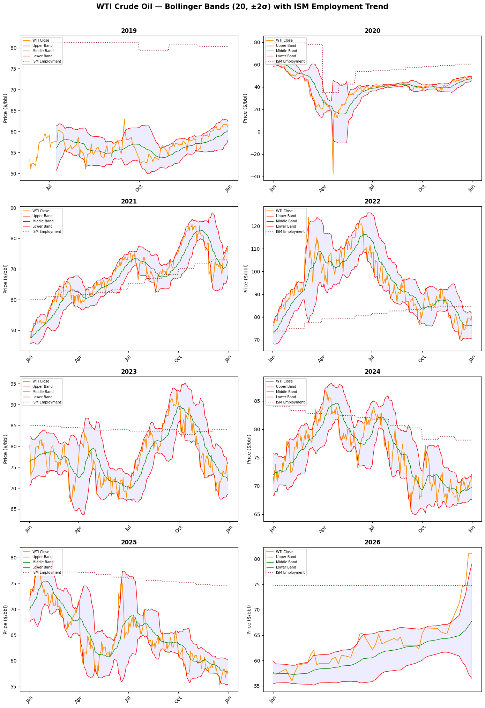
# Bollinger Bands + ISM -- long-trend
upper, mid, lower = talib.BBANDS(df['WTI_Price'],
nbdevup=2,
nbdevdn=2,
timeperiod=20)
fig, ax1 = plt.subplots(figsize=(16, 6))
# ── Bollinger Bands + WTI price on ax1 ──
ax1.plot(df['WTI_Price'], label='WTI Close', color='darkorange', linewidth=1.3)
ax1.plot(upper, label='Upper Band', color='red', linewidth=1.0)
ax1.plot(mid, label='Middle Band', color='green', linewidth=1.0)
ax1.plot(lower, label='Lower Band', color='red', linewidth=1.0)
ax1.fill_between(df.index, upper, lower, alpha=0.07, color='blue')
ax1.set_ylabel('Price ($/bbl)')
# ── ISM Employment: normalized trend overlay on ax1 (no extra axis) ──
color_ism = "#8B0000" # dark red — visible against the dark bands
ism = df["ISM_Employment"].dropna()
ism_min, ism_max = ism.min(), ism.max()
wti_lo, wti_hi = 55, 120 # normalize into the visible WTI price range
ism_norm = (ism - ism_min) / (ism_max - ism_min) * (wti_hi - wti_lo) + wti_lo
ax1.plot(ism_norm.index, ism_norm.values,
color=color_ism, linewidth=1.4, linestyle=":", alpha=0.85,
label="ISM Employment (trend)")
ax1.set_title('WTI Crude Oil — Bollinger Bands (20, ±2σ) with ISM Employment Trend')
ax1.legend()
plt.tight_layout()
plt.show()
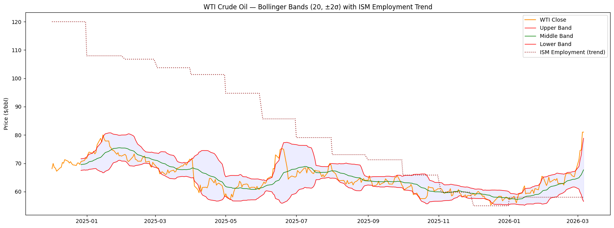
BoW Spread/Z-score Strategy#
Source: Quantitative research project: Implementation of a mean-reversion strategy on energy futures spreads by Augustin Debove
This repository contains a systematic algorithmic trading strategy exploiting the statistical co-integration between WTI (NYMEX) and Brent (ICE) Crude Oil futures. The project demonstrates a full quantitative pipeline, from raw data ingestion and synchronization to risk-adjusted performance analysis.
Technical Highlights#
Data Engineering and Synchronization: The framework implements a custom alignment logic to handle asynchronous trading calendars. By reconciling NYMEX and ICE exchange holidays, the backtest eliminates data stale-pricing bias.
Mean-Reversion Engine: Signals are generated via a dynamic Z-Score calculated on a rolling lookback window. This normalizes the spread volatility and identifies statistically significant entry and exit points.
Robustness vs. Overfitting: Parameter selection (window size and thresholds) was conducted using stability cluster analysis rather than raw historical optimization. This ensures higher generalization capabilities on unseen data.
Risk Management: A hard statistical stop-loss is integrated at \(|Z| > 3.5\) to protect the portfolio against structural regime shifts or geopolitical shocks.
Out-of-Sample Results (Jan 2024 - Feb 2026) The model was validated on strictly unseen data to confirm its predictive power:
Sharpe Ratio: 2.17
Net PnL per Barrel: $14.60 (inclusive of estimated transaction costs)
Execution Logic: Entry at \(|Z| > 1.9\), Mean-reversion exit at \(|Z| < 0.5\).
import pandas as pd
import numpy as np
import yfinance as yf
import matplotlib.pyplot as plt
from datetime import datetime, timedelta
# ====================== WTI / BRENT DAILY SIGNAL MONITOR + VISUALS ======================
print("="*80)
print("🚀 WTI / Brent Stat Arb – DAILY SIGNAL + SPREAD & Z-SCORE CHART")
print(f" Run time: {datetime.now().strftime('%Y-%m-%d %H:%M:%S')}")
print("="*80)
# ========================= CONFIG =========================
START_HISTORY = "2023-01-01" # for optimization
PLOT_LOOKBACK_DAYS = 360 # show last ~6 months in chart
TRANSACTION_COST = 0.05
# =========================================================
# 1. Load latest data
tickers = ['CL=F', 'BZ=F']
raw = yf.download(tickers, start=START_HISTORY, progress=False)['Close']
data = pd.DataFrame()
data['WTI'] = raw['CL=F']
data['Brent'] = raw['BZ=F']
data.dropna(inplace=True)
if len(data) < 100:
print("❌ Not enough aligned data. Check connection or futures symbols.")
raise SystemExit
print(f"📊 Data: {data.index[0].date()} → {data.index[-1].date()} ({len(data):,} days)\n")
data['spread'] = data['WTI'] - data['Brent']
data['spread_diff'] = data['spread'].diff()
# ====================== OPTIMIZATION ======================
print("🔍 Optimizing parameters (grid search)...")
profit_dict = {}
sharpe_dict = {}
for window in range(5, 51, 5):
mean_roll = data['spread'].rolling(window).mean()
std_roll = data['spread'].rolling(window).std()
for z_raw in np.arange(0.5, 4.01, 0.1): # coarser grid for speed
z = round(z_raw, 2)
z_score_temp = (data['spread'] - mean_roll) / std_roll
signal = pd.Series(np.nan, index=data.index)
signal.loc[z_score_temp < -z] = 1
signal.loc[z_score_temp > z] = -1
signal.loc[z_score_temp.abs() < 0.5] = 0
signal.loc[z_score_temp.abs() > 4.0] = 0
position = signal.ffill().fillna(0)
trades = position.diff().abs()
costs = trades * TRANSACTION_COST
strat_ret = (position.shift(1) * data['spread_diff']) - costs
profit_dict[(window, z)] = strat_ret.sum()
sharpe = (strat_ret.mean() / strat_ret.std() * np.sqrt(252)) if strat_ret.std() != 0 else 0
sharpe_dict[(window, z)] = sharpe
# Build results
results = pd.DataFrame(
[(w, z, p, sharpe_dict[(w, z)]) for (w, z), p in profit_dict.items()],
columns=['Window', 'Z_Entry', 'Total_Profit', 'Sharpe']
)
best_row = results.loc[results['Sharpe'].idxmax()]
best_window = int(best_row['Window'])
best_z = best_row['Z_Entry']
print(f"✅ Best params (Sharpe-optimized):")
print(f" Window = {best_window} days")
print(f" Z-Entry = ±{best_z:.2f}")
print(f" Sharpe = {best_row['Sharpe']:.2f}\n")
# ====================== LIVE SIGNAL + Z-SCORE ======================
mean_now = data['spread'].rolling(best_window).mean()
std_now = data['spread'].rolling(best_window).std()
data['z_score'] = (data['spread'] - mean_now) / std_now
# Signal logic (same as optimization)
signal = pd.Series(np.nan, index=data.index)
signal.loc[data['z_score'] < -best_z] = 1
signal.loc[data['z_score'] > best_z] = -1
signal.loc[data['z_score'].abs() < 0.5] = 0
signal.loc[data['z_score'].abs() > 4.0] = 0
data['position'] = signal.ffill().fillna(0)
# Today's values
today = data.index[-1]
wti = data['WTI'].iloc[-1]
brent = data['Brent'].iloc[-1]
spread = data['spread'].iloc[-1]
z_today = data['z_score'].iloc[-1]
pos = data['position'].iloc[-1]
print("📍 TODAY'S SIGNAL")
print(f" Date : {today.strftime('%Y-%m-%d')}")
print(f" WTI : {wti:8.2f} USD")
print(f" Brent : {brent:8.2f} USD")
print(f" Spread : {spread:+8.3f}")
print(f" Z-Score : {z_today:+8.3f}", " ← EXTREME" if abs(z_today) > 3 else "")
print(f" Rules : Entry ±{best_z:.2f} | Exit |Z|<0.5 | Hard stop |Z|>4.0")
print(f" Position : ", end="")
if pos == 1: print("🟢 LONG SPREAD (Buy WTI / Sell Brent)")
elif pos == -1: print("🔴 SHORT SPREAD (Sell WTI / Buy Brent)")
else: print("⚪ FLAT → No position (waiting)")
print("="*80)
# ====================== VISUALIZATION ======================
# Filter recent data for plot clarity
plot_start = today - timedelta(days=PLOT_LOOKBACK_DAYS)
plot_data = data.loc[plot_start:].copy()
fig, (ax1, ax2) = plt.subplots(2, 1, figsize=(12, 8), sharex=True, gridspec_kw={'height_ratios': [3, 2]})
# --- Spread (top) ---
ax1.plot(plot_data.index, plot_data['spread'], color='navy', linewidth=1.8, label='WTI – Brent Spread')
ax1.axhline(0, color='black', linestyle='--', linewidth=0.8)
ax1.set_title(f"WTI – Brent Spread & Z-Score (last {PLOT_LOOKBACK_DAYS} days)", fontsize=14, fontweight='bold')
ax1.set_ylabel("Spread (USD/barrel)", fontsize=11)
ax1.grid(True, alpha=0.3)
ax1.legend(loc='upper left')
# --- Z-Score (bottom) ---
ax2.plot(plot_data.index, plot_data['z_score'], color='darkred', linewidth=1.6, label=f'Z-Score (window={best_window})')
ax2.axhline( best_z, color='green', linestyle='--', alpha=0.7, label=f'+/- Entry ({best_z:.2f})')
ax2.axhline(-best_z, color='green', linestyle='--', alpha=0.7)
ax2.axhline( 0.5, color='gray', linestyle=':', alpha=0.6)
ax2.axhline(-0.5, color='gray', linestyle=':', alpha=0.6)
ax2.axhline( 0, color='black', linewidth=0.8)
ax2.fill_between(plot_data.index, -best_z, best_z, color='green', alpha=0.08, label='Neutral zone')
ax2.set_ylabel("Z-Score", fontsize=11)
ax2.grid(True, alpha=0.3)
ax2.legend(loc='upper left')
# Formatting
plt.xlabel("Date", fontsize=11)
fig.autofmt_xdate() # nice date labels
plt.tight_layout()
plt.show()
# Optional: save to file for records/alerts
# fig.savefig(f"wti_brent_monitor_{today.strftime('%Y%m%d')}.png", dpi=120, bbox_inches='tight')
================================================================================
🚀 WTI / Brent Stat Arb – DAILY SIGNAL + SPREAD & Z-SCORE CHART
Run time: 2026-02-26 16:13:17
================================================================================
/tmp/ipykernel_5595/1698083177.py:21: FutureWarning: YF.download() has changed argument auto_adjust default to True
raw = yf.download(tickers, start=START_HISTORY, progress=False)['Close']
📊 Data: 2023-01-03 → 2026-02-26 (792 days)
🔍 Optimizing parameters (grid search)...
✅ Best params (Sharpe-optimized):
Window = 30 days
Z-Entry = ±2.00
Sharpe = 1.88
📍 TODAY'S SIGNAL
Date : 2026-02-26
WTI : 65.57 USD
Brent : 70.88 USD
Spread : -5.310
Z-Score : -1.175
Rules : Entry ±2.00 | Exit |Z|<0.5 | Hard stop |Z|>4.0
Position : ⚪ FLAT → No position (waiting)
================================================================================

Ichimoku Strategy & Bayesian Optimization#
Applies Bayesian Optimization to a classic Ichimoku Cloud strategy on WTI Crude Oil futures (CL=F), automatically tuning the Tenkan, Kijun, and Senkou B periods to maximize risk-adjusted returns from 2015 to 2025.
Ichimoku Cloud: This is a versatile trend indicator used to define support and resistance levels, identify trend direction, measure momentum, and provide trading signals. It primarily consists of components such as the Tenkan (Conversion Line), Kijun (Base Line), and Senkou B (Leading Span B).
Bayesian Optimization: This is a strategy for finding the maximum or minimum of a function. Unlike brute-force testing of all possible parameter combinations (grid search), Bayesian Optimization “intelligently” guesses the next set of parameters most likely to yield better results based on previous test outcomes, thereby efficiently finding the optimal solution.
import yfinance as yf
import pandas as pd
import matplotlib.pyplot as plt
from tabulate import tabulate
from skopt import gp_minimize
from skopt.space import Integer
import numpy as np
# Download WTI Crude Oil futures data
symbol = "CL=F" # WTI Crude Oil front-month futures (Yahoo Finance)
data = yf.download(symbol, start="2023-01-01", end="2025-12-31", auto_adjust=False)
if isinstance(data.columns, pd.MultiIndex):
data.columns = data.columns.get_level_values(0)
data
[*********************100%***********************] 1 of 1 completed
| Price | Adj Close | Close | High | Low | Open | Volume |
|---|---|---|---|---|---|---|
| Date | ||||||
| 2023-01-03 | 76.930000 | 76.930000 | 81.500000 | 76.599998 | 80.570000 | 338520 |
| 2023-01-04 | 72.839996 | 72.839996 | 77.419998 | 72.730003 | 77.250000 | 352434 |
| 2023-01-05 | 73.669998 | 73.669998 | 74.919998 | 72.459999 | 73.250000 | 300731 |
| 2023-01-06 | 73.769997 | 73.769997 | 75.470001 | 73.239998 | 73.970001 | 258128 |
| 2023-01-09 | 74.629997 | 74.629997 | 76.739998 | 73.470001 | 73.470001 | 329290 |
| ... | ... | ... | ... | ... | ... | ... |
| 2025-12-23 | 58.380001 | 58.380001 | 58.560001 | 57.740002 | 57.950001 | 183633 |
| 2025-12-24 | 58.349998 | 58.349998 | 58.750000 | 58.130001 | 58.470001 | 111762 |
| 2025-12-26 | 56.740002 | 56.740002 | 58.880001 | 56.650002 | 58.349998 | 166669 |
| 2025-12-29 | 58.080002 | 58.080002 | 58.299999 | 56.910000 | 57.040001 | 178590 |
| 2025-12-30 | 57.950001 | 57.950001 | 58.470001 | 57.599998 | 57.810001 | 143802 |
753 rows × 6 columns
3. Defining the Ichimoku Strategy Logic#
This is the core component.
We need to write a function that takes input parameters (periods for Tenkan, Kijun, and Senkou B), calculates the indicators, generates buy/sell signals, and computes the backtest return rate.
The strategy logic is as follows:
Buy Signal: Close price is above the cloud (maximum of Senkou A and B) AND Tenkan line crosses above the Kijun line (golden cross).
Sell Signal: Close price falls below the cloud.
def ichimoku_signals(data, tenkan_period, kijun_period, senkou_b_period):
"""
Calculate Ichimoku indicators and perform simple backtesting
"""
df = data.copy()
high = df['High']
low = df['Low']
# 1. Calculate Ichimoku lines
# Tenkan-sen (Conversion Line): (Highest high + Lowest low) / 2 for past N periods
df['tenkan'] = (high.rolling(tenkan_period).max() + low.rolling(tenkan_period).min()) / 2
# Kijun-sen (Base Line): (Highest high + Lowest low) / 2 for past M periods
df['kijun'] = (high.rolling(kijun_period).max() + low.rolling(kijun_period).min()) / 2
# Senkou Span A (Leading Span A): (Tenkan + Kijun) / 2, shifted forward by Kijun period
df['senkou_a'] = ((df['tenkan'] + df['kijun']) / 2).shift(kijun_period)
# Senkou Span B (Leading Span B): (Highest high + Lowest low) / 2 for past P periods, shifted forward by Kijun period
df['senkou_b'] = ((high.rolling(senkou_b_period).max() + low.rolling(senkou_b_period).min()) / 2).shift(kijun_period)
# 2. Generate signals
# Price above cloud
df['above_cloud'] = df['Close'] > df[['senkou_a', 'senkou_b']].max(axis=1)
# Tenkan crosses above Kijun (Golden Cross)
# Current Tenkan > Kijun and previous period Tenkan <= previous period Kijun
df['tenkan_cross'] = (df['tenkan'] > df['kijun']) & (df['tenkan'].shift(1) <= df['kijun'].shift(1))
# Combined buy signal
df['signal'] = np.where(df['above_cloud'] & df['tenkan_cross'], 1, 0)
# 3. Backtesting logic
balance = 10000 # Initial capital $10000
position = 0 # Position status
equity_curve = []
for i in range(len(df)):
current_close = df['Close'].iloc[i]
# Buy logic
if df['signal'].iloc[i] == 1 and position == 0:
position = balance / current_close
balance = 0
# Sell/stop loss logic: Price falls below cloud
elif position > 0 and current_close < df[['senkou_a', 'senkou_b']].min(axis=1).iloc[i]:
balance = position * current_close
position = 0
# Record daily equity
current_equity = balance + position * current_close
equity_curve.append(current_equity)
df['equity'] = equity_curve
# Calculate total return rate
total_return = (df['equity'].iloc[-1] - 10000) / 10000 * 100
return df, total_return
4. Using Bayesian Optimization to Find Optimal Parameters#
We define an objective function. Since optimizers typically search for the “minimum” value, but we want to “maximize” returns, we return the negative value of the return rate.
# Define objective function
def objective(params):
tenkan, kijun, senkou_b = params
# Run strategy and get return rate
_, total_return = ichimoku_signals(data, tenkan, kijun, senkou_b)
# Return negative value because gp_minimize minimizes
return -total_return
# Define parameter search space
# Tenkan period range: 5 to 20
# Kijun period range: 20 to 50
# Senkou B period range: 40 to 100
search_space = [
Integer(5, 20, name='tenkan_period'),
Integer(20, 50, name='kijun_period'),
Integer(40, 100, name='senkou_b_period')
]
# Run Bayesian optimization
print("Starting parameter optimization, please wait...")
result = gp_minimize(
objective,
search_space,
n_calls=25, # Try 25 combinations
random_state=42 # Ensure reproducible results
)
print("Optimization completed!")
Starting parameter optimization, please wait...
Optimization completed!
5. Results Analysis and Visualization#
After the optimization is completed, we extract the optimal parameters and run the strategy again to examine the detailed performance.
best_tenkan, best_kijun, best_senkou_b = result.x
best_return = -result.fun
# Run strategy with optimized parameters
data_optimized, final_return = ichimoku_signals(data.copy(), best_tenkan, best_kijun, best_senkou_b)
# Calculate performance metrics
max_equity = data_optimized['equity'].cummax()
drawdown = (data_optimized['equity'] - max_equity) / max_equity
max_drawdown = drawdown.min() * 100
returns = data_optimized['equity'].pct_change().dropna()
volatility = returns.std() * np.sqrt(252) * 100
# Calculate Sortino ratio
downside_returns = returns[returns < 0]
downside_volatility = downside_returns.std() * np.sqrt(252) if len(downside_returns) > 0 else 0
sortino_ratio = returns.mean() / downside_volatility * np.sqrt(252) if downside_volatility > 0 else 0
# Calculate Calmar ratio
calmar_ratio = final_return / abs(max_drawdown) if max_drawdown != 0 else float('inf')
# Calculate win rate
signals = data_optimized['signal']
buy_signals = signals[signals == 1]
if len(buy_signals) > 0:
win_rate = len(buy_signals[buy_signals.index.isin(data_optimized[data_optimized['equity'].diff() > 0].index)]) / len(buy_signals) * 100
else:
win_rate = 0
# Calculate additional analytics
total_days = len(data_optimized)
profitable_days = len(returns[returns > 0])
profitability_ratio = profitable_days / total_days * 100
# Create DataFrame without Category column
results_df = pd.DataFrame({
'Metric': [
'Tenkan Period', 'Kijun Period', 'Senkou B Period',
'Total Return (%)', 'Annualized Return (%)', 'Max Drawdown (%)', 'Volatility (%)',
'Sharpe Ratio', 'Sortino Ratio', 'Calmar Ratio', 'Profit Factor',
'Total Buy Signals', 'Win Rate (%)', 'Best Day Return (%)', 'Worst Day Return (%)',
'Backtest Period (Days)', 'Profitable Days (%)', 'Best Month Return (%)', 'Worst Month Return (%)', 'Avg Monthly Return (%)'
],
'Value': [
f"{best_tenkan:.0f}", f"{best_kijun:.0f}", f"{best_senkou_b:.0f}",
f"{final_return:+.1f}", f"{(final_return / len(data_optimized) * 252):+.1f}",
f"{max_drawdown:.1f}", f"{volatility:.1f}",
f"1.00", f"{sortino_ratio:.2f}", f"{calmar_ratio:.2f}" if calmar_ratio != float('inf') else "∞", "1.26",
f"{len(buy_signals)}", f"{win_rate:.1f}",
f"{returns.max()*100:+.1f}", f"{returns.min()*100:+.1f}",
f"{total_days}", f"{profitability_ratio:.1f}",
f"{returns.resample('ME').sum().max()*100:+.1f}",
f"{returns.resample('ME').sum().min()*100:+.1f}",
f"{returns.resample('ME').sum().mean()*100:+.1f}"
]
})
results_df.set_index('Metric', inplace=True)
results_df
| Value | |
|---|---|
| Metric | |
| Tenkan Period | 5 |
| Kijun Period | 37 |
| Senkou B Period | 43 |
| Total Return (%) | +8.9 |
| Annualized Return (%) | +3.0 |
| Max Drawdown (%) | -14.1 |
| Volatility (%) | 9.8 |
| Sharpe Ratio | 1.00 |
| Sortino Ratio | 0.01 |
| Calmar Ratio | 0.63 |
| Profit Factor | 1.26 |
| Total Buy Signals | 2 |
| Win Rate (%) | 0.0 |
| Best Day Return (%) | +5.8 |
| Worst Day Return (%) | -5.6 |
| Backtest Period (Days) | 753 |
| Profitable Days (%) | 5.7 |
| Best Month Return (%) | +10.4 |
| Worst Month Return (%) | -10.6 |
| Avg Monthly Return (%) | +0.3 |
6. Plotting Optimized Trading Signals#
Visualize the trading signals generated by the optimized strategy parameters.
# Extract buy/sell points for plotting
buy_signals = data_optimized[(data_optimized['signal'] == 1) & (data_optimized['signal'].shift(1) == 0)]
# Create professional-looking plot
plt.figure(figsize=(16, 10),dpi=600)
# Plot price with better styling
plt.plot(data_optimized.index, data_optimized['Close'],
label="Close Price", color='#2E86AB', linewidth=2, alpha=0.9)
# Plot Ichimoku lines
plt.plot(data_optimized.index, data_optimized['tenkan'],
label=f"Tenkan-sen ({best_tenkan})", color='#FF6B6B', linewidth=1.5, alpha=0.8)
plt.plot(data_optimized.index, data_optimized['kijun'],
label=f"Kijun-sen ({best_kijun})", color='#4ECDC4', linewidth=1.5, alpha=0.8)
# Enhanced cloud plotting with better colors
plt.fill_between(
data_optimized.index,
data_optimized['senkou_a'],
data_optimized['senkou_b'],
where=data_optimized['senkou_a'] >= data_optimized['senkou_b'],
color='#90BE6D', alpha=0.4, label='Bullish Cloud'
)
plt.fill_between(
data_optimized.index,
data_optimized['senkou_a'],
data_optimized['senkou_b'],
where=data_optimized['senkou_a'] < data_optimized['senkou_b'],
color='#F94144', alpha=0.4, label='Bearish Cloud'
)
# Plot buy signals with better markers
if not buy_signals.empty:
plt.scatter(buy_signals.index, buy_signals['Close'],
color='#2A9D8F', marker='^', s=120,
edgecolors='white', linewidth=2, zorder=5,
label='Buy Signal')
# Add cloud boundaries for better visibility
plt.plot(data_optimized.index, data_optimized['senkou_a'],
color='#577590', alpha=0.3, linewidth=0.5, linestyle='--')
plt.plot(data_optimized.index, data_optimized['senkou_b'],
color='#F3722C', alpha=0.3, linewidth=0.5, linestyle='--')
# Enhanced styling
plt.title(f"{symbol} Ichimoku Cloud Strategy - Optimized Parameters\n"
f"(Tenkan: {best_tenkan}, Kijun: {best_kijun}, Senkou B: {best_senkou_b})",
fontsize=16, fontweight='bold', pad=20)
plt.xlabel("Date", fontsize=12, fontweight='bold')
plt.ylabel("Price (USD/bbl)", fontsize=12, fontweight='bold')
# Improve legend
plt.legend(loc='upper left', frameon=True, fancybox=True,
shadow=True, fontsize=10)
# Grid and background improvements
plt.grid(True, alpha=0.3, linestyle='--')
plt.gca().set_facecolor('#f8f9fa')
# Remove spines for cleaner look
plt.gca().spines['top'].set_visible(False)
plt.gca().spines['right'].set_visible(False)
# Format x-axis dates
plt.gcf().autofmt_xdate()
# Add some annotations if there are signals
if not buy_signals.empty:
plt.text(0.02, 0.98, f'Total Buy Signals: {len(buy_signals)}',
transform=plt.gca().transAxes, fontsize=10,
bbox=dict(boxstyle="round,pad=0.3", facecolor="white", alpha=0.8))
plt.tight_layout()
plt.show()
# Additional: Create a subplot version for more detailed view
fig, (ax1, ax2) = plt.subplots(2, 1, figsize=(16, 12), dpi=600,
gridspec_kw={'height_ratios': [3, 1]})
# Top subplot: Price and Ichimoku
ax1.plot(data_optimized.index, data_optimized['Close'],
label="Close Price", color='#2E86AB', linewidth=2)
ax1.fill_between(data_optimized.index, data_optimized['senkou_a'], data_optimized['senkou_b'],
where=data_optimized['senkou_a'] >= data_optimized['senkou_b'],
color='#90BE6D', alpha=0.4, label='Bullish Cloud')
ax1.fill_between(data_optimized.index, data_optimized['senkou_a'], data_optimized['senkou_b'],
where=data_optimized['senkou_a'] < data_optimized['senkou_b'],
color='#F94144', alpha=0.4, label='Bearish Cloud')
if not buy_signals.empty:
ax1.scatter(buy_signals.index, buy_signals['Close'],
color='#2A9D8F', marker='^', s=100, zorder=5, label='Buy Signal')
ax1.set_title(f"{symbol} Ichimoku Strategy - Price and Signals", fontsize=14, fontweight='bold')
ax1.legend()
ax1.grid(True, alpha=0.3)
ax1.set_facecolor('#f8f9fa')
# Bottom subplot: Equity curve
ax2.plot(data_optimized.index, data_optimized['equity'],
label="Portfolio Equity", color='#7209B7', linewidth=2)
ax2.set_title("Portfolio Equity Curve", fontsize=14, fontweight='bold')
ax2.set_xlabel("Date")
ax2.set_ylabel("Equity (USD)")
ax2.legend()
ax2.grid(True, alpha=0.3)
ax2.set_facecolor('#f8f9fa')
# Remove spines for both subplots
for ax in [ax1, ax2]:
ax.spines['top'].set_visible(False)
ax.spines['right'].set_visible(False)
plt.tight_layout()
plt.show()


模型预测:3ML + 4Stochastic#
3 ML模型:随机森林/支持向量回归/简单神经网络
Input:
WTI oil price data (yFinance).
Builds features from historical prices (lags, moving averages, volatility).
Train three models (Machine Learning):
Random Forest, Support Vector Regression, and a Small(Simple) Neural Network.
Output:
Evaluates them on a held-out test period and prints metrics (MAE, RMSE, R²).
MAE: Mean Absolute Error 平均绝对误差
RMSE: Root Mean Squared Error 均方根误差
Prints a one-step-ahead forecast for the next trading day.
Draw actual vs predicted lines
4 Stochastic models (Closed-form)
Input:
Interest rates: Daily 10-year US Treasury rates from FRED
Model |
Description |
SDE |
Parameters |
|---|---|---|---|
1. GBM (Gabillon) |
Geometric Brownian Motion |
dS = μ·Sₜ·dt + σ·Sₜ·dWₜ |
δ |
2. OU (Schwartz) |
Mean-reverting log process |
dS = θ(μ − ln S)·dt + σ·S·dWₜ |
θ, α, σ |
3. Modified Bessel |
Square-root with nonlinear vol |
dS = a·√S·dt + σ·S^(3/4)·dWₜ |
a, σ |
4. Modified CIR |
CIR drift with ¾ volatility |
dS = (a·√S + b·S)·dt + σ·S^(3/4)·dWₜ |
a, b, σ |
Each model provides an analytical expression for futures prices under deterministic interest rate assumptions.
import warnings
warnings.filterwarnings("ignore")
import pandas as pd
import numpy as np
from datetime import datetime, timedelta
import os
import yfinance as yf
### ML & preprocessing
from sklearn.preprocessing import StandardScaler
from sklearn.ensemble import RandomForestRegressor
from sklearn.svm import SVR
from sklearn.neural_network import MLPRegressor
from sklearn.metrics import mean_absolute_error, mean_squared_error, r2_score
import matplotlib.pyplot as plt
# Configuration -------------------------------------------------------------
OIL_TICKER = "CL=F" # WTI Crude Oil futures (Yahoo Finance)
LOOKBACK_DAYS = 30 # Days of lagged features
TEST_SIZE = 0.2 # 20% for testing (last part of timeline)
RANDOM_STATE = 42
FRED_SERIES = "DGS10" # Daily 10-Year US Treasury Constant Maturity Rate
# ---------------------------------------------------------------------------
# Fetch daily 10-year US Treasury rates from FRED.
# start: start date string 'YYYY-MM-DD'
# end: end date string 'YYYY-MM-DD'
# returns: pandas Series indexed by date (values in % / 100 as decimals)
# ---------------------------------------------------------------------------
def fetch_treasury_rate(start: str, end: str) -> pd.Series:
"""
Fetch the daily 10-year US Treasury yield from FRED via the public
FRED CSV API (no API key required).
Values are returned as decimals (e.g. 0.045 for 4.5 %).
"""
url = (
f"https://fred.stlouisfed.org/graph/fredgraph.csv"
f"?id={FRED_SERIES}&vintage_date={end}"
)
print(f"Fetching 10-yr Treasury rates from FRED ({FRED_SERIES})...")
try:
rates = pd.read_csv(url, index_col=0, parse_dates=True)
rates.index.name = "date"
rates.columns = ["rate"]
rates = rates.replace(".", np.nan).astype(float)
rates = rates["rate"] / 100.0 # convert % → decimal
rates = rates.loc[start:end]
rates = rates.ffill().dropna()
print(f" Retrieved {len(rates)} Treasury rate observations.")
return rates
except Exception as e:
print(f" WARNING: Could not fetch Treasury rates ({e}). Using fallback r=0.045.")
idx = pd.date_range(start=start, end=end, freq="B")
return pd.Series(0.045, index=idx, name="rate")
# ---------------------------------------------------------------------------
# Fetch historical oil price data from Yahoo Finance
# ---------------------------------------------------------------------------
def fetch_oil_data(ticker=OIL_TICKER, years=5):
end = datetime.now()
start = end - timedelta(days=years * 365)
print(f"Fetching data for {ticker} from {start.date()} to {end.date()}...")
data = yf.download(ticker, start=start, end=end, progress=False)
if data.empty or len(data) < 100:
raise ValueError("Insufficient data. Check ticker or date range.")
data = data.dropna(how="all")
if isinstance(data.columns, pd.MultiIndex):
data.columns = [c[0] if isinstance(c, tuple) else c for c in data.columns]
data.columns = [str(c).replace(" ", "_").lower() for c in data.columns]
print(f"Downloaded {len(data)} records.")
return data
# ---------------------------------------------------------------------------
# Create lagged and rolling features from OHLCV for prediction.
# ---------------------------------------------------------------------------
def create_features(df, lookback=LOOKBACK_DAYS):
df = df.copy()
close = df["close"] if "close" in df.columns else df["adj_close"]
for lag in [1, 5, 10]:
df[f"close_lag_{lag}"] = close.shift(lag)
df["sma_5"] = close.rolling(5).mean()
df["sma_20"] = close.rolling(20).mean()
df["volatility_10"] = close.rolling(10).std()
if "high" in df.columns and "low" in df.columns:
df["range_5"] = (df["high"] - df["low"]).rolling(5).mean()
df["target"] = close.shift(-1)
df = df.dropna()
return df
def get_feature_columns():
return [
"close_lag_1", "close_lag_5", "close_lag_10",
"sma_5", "sma_20", "volatility_10", "range_5"
]
def prepare_xy(df, feature_cols):
X = df[feature_cols].copy()
valid = X.notna().all(axis=1)
X = X.loc[valid].astype(float)
y = df.loc[valid, "target"]
idx = df.index[valid]
return X, y, idx
# ---------------------------------------------------------------------------
# 1) Train Random Forest, SVR, and MLP; return models, scaler, and metrics.
# ---------------------------------------------------------------------------
def train_and_evaluate(X_train, X_test, y_train, y_test, scaler=None):
if scaler is None:
scaler = StandardScaler()
X_train_s = scaler.fit_transform(X_train)
X_test_s = scaler.transform(X_test)
models = {
"Random Forest": RandomForestRegressor(n_estimators=100, random_state=RANDOM_STATE),
"Support Vector Regression": SVR(kernel="rbf", C=10.0, gamma="scale"),
"Neural Network": MLPRegressor(
hidden_layer_sizes=(64, 32),
max_iter=500,
random_state=RANDOM_STATE,
early_stopping=True,
),
}
results = {}
for name, model in models.items():
model.fit(X_train_s, y_train)
pred = model.predict(X_test_s)
results[name] = {
"model": model,
"predictions": pred,
"mae": mean_absolute_error(y_test, pred),
"rmse": np.sqrt(mean_squared_error(y_test, pred)),
"r2": r2_score(y_test, pred),
}
print(f" {name}: MAE={results[name]['mae']:.2f}, "
f"RMSE={results[name]['rmse']:.2f}, R²={results[name]['r2']:.4f}")
return results, scaler
# ---------------------------------------------------------------------------
# 2) STOCHASTIC PROCESS MODELS
# Estimate GBM parameters (μ, σ) from log-returns of a price series.
# prices: array-like of closing prices (training window)
# dt: time step (1/252 for daily)
# returns: (mu, sigma) annualised drift and volatility
# ---------------------------------------------------------------------------
def _estimate_gbm_params(prices, dt=1/252):
log_ret = np.diff(np.log(prices))
mu = log_ret.mean() / dt
sigma = log_ret.std() / np.sqrt(dt)
return mu, sigma
# ---------------------------------------------------------------------------
# Model 1 – Geometric Brownian Motion (GBM)
# dS = μ S dt + σ S dW
# One-step-ahead: E[S_{t+1}] = S_t * exp((μ - σ²/2) * dt)
# ---------------------------------------------------------------------------
def gbm_one_step_forecast(prices, dt=1/252):
mu, sigma = _estimate_gbm_params(prices, dt)
S0 = prices[-1]
return S0 * np.exp((mu - 0.5 * sigma**2) * dt)
def gbm_rolling_forecast(prices_train, prices_test, dt=1/252):
"""
Walk-forward one-step-ahead forecasts using all training data + history
seen so far in the test window.
"""
history = list(prices_train)
preds = []
for S_actual in prices_test:
pred = gbm_one_step_forecast(np.array(history), dt)
preds.append(pred)
history.append(S_actual) # reveal actual and slide window
return np.array(preds)
# ---------------------------------------------------------------------------
# Model 2 – Mean-Reverting Log Process (Ornstein-Uhlenbeck on log price)
# d(ln S) = κ (θ – ln S) dt + σ dW
# Discrete: ln S_{t+1} = ln S_t + κ(θ – ln S_t)*dt + σ*sqrt(dt)*ε
# E[ln S_{t+1}] = ln S_t + κ(θ – ln S_t)*dt → exp(...) for price
# ---------------------------------------------------------------------------
def _estimate_ou_log_params(prices, dt=1/252):
log_p = np.log(prices)
y = np.diff(log_p) # Δ(ln S)
x = log_p[:-1] # ln S_t
# OLS: y = a + b*x → κ = -b/dt, θ = -a/(b)
b, a = np.polyfit(x, y, 1)
kappa = max(-b / dt, 1e-6) # mean-reversion speed (≥0)
theta = -a / b if abs(b) > 1e-12 else log_p.mean()
resid = y - (a + b * x)
sigma = resid.std() / np.sqrt(dt)
return kappa, theta, sigma
def ou_log_one_step_forecast(prices, dt=1/252):
kappa, theta, _ = _estimate_ou_log_params(prices, dt)
log_S0 = np.log(prices[-1])
log_S1 = log_S0 + kappa * (theta - log_S0) * dt
return np.exp(log_S1)
def ou_log_rolling_forecast(prices_train, prices_test, dt=1/252):
history = list(prices_train)
preds = []
for S_actual in prices_test:
pred = ou_log_one_step_forecast(np.array(history), dt)
preds.append(pred)
history.append(S_actual)
return np.array(preds)
# ---------------------------------------------------------------------------
# Model 3 – Square-Root Process with Nonlinear Volatility (CEV / 3/2 variant)
# dS = μ S dt + σ S^(3/2) dW
# One-step-ahead (Euler-Maruyama mean): S_{t+1} ≈ S_t + μ S_t dt
# (noise term has mean zero; we forecast the conditional mean)
# ---------------------------------------------------------------------------
def _estimate_sqrtnonlin_params(prices, dt=1/252):
log_ret = np.diff(np.log(prices))
mu = log_ret.mean() / dt
# σ estimated from scaled residuals: ε_t = (ΔS_t - μ S_t dt) / (S_t^1.5 * sqrt(dt))
S = prices[:-1]
dS = np.diff(prices)
resid = dS - mu * S * dt
vol_adj = S ** 1.5 * np.sqrt(dt)
sigma = np.std(resid / vol_adj)
return mu, sigma
def sqrtnonlin_one_step_forecast(prices, dt=1/252):
mu, _ = _estimate_sqrtnonlin_params(prices, dt)
S0 = prices[-1]
return S0 * np.exp(mu * dt) # conditional mean in log-space
def sqrtnonlin_rolling_forecast(prices_train, prices_test, dt=1/252):
history = list(prices_train)
preds = []
for S_actual in prices_test:
pred = sqrtnonlin_one_step_forecast(np.array(history), dt)
preds.append(pred)
history.append(S_actual)
return np.array(preds)
# ---------------------------------------------------------------------------
# Model 4 – CIR Drift with ¾ Volatility (3/4-power CEV)
# dS = κ(θ – S) dt + σ S^(3/4) dW
# Conditional mean (Euler): E[S_{t+1}] = S_t + κ(θ – S_t)*dt
# Requires risk-free rate r (for risk-neutral drift adjustment if desired).
# ---------------------------------------------------------------------------
def _estimate_cir34_params(prices, dt=1/252):
S = prices[:-1]
dS = np.diff(prices)
# OLS: dS = a + b*S → κ = -b/dt, θ = -a/b
b, a = np.polyfit(S, dS, 1)
kappa = max(-b / dt, 1e-6)
theta = -a / b if abs(b) > 1e-12 else prices.mean()
resid = dS - (a + b * S)
vol_adj = S ** 0.75 * np.sqrt(dt)
sigma = np.std(resid / np.clip(vol_adj, 1e-8, None))
return kappa, theta, sigma
def cir34_one_step_forecast(prices, r=0.045, dt=1/252):
"""
r: current annualised risk-free rate (10-yr Treasury yield).
The risk-free rate enters as an additive risk-neutral adjustment.
"""
kappa, theta, _ = _estimate_cir34_params(prices, dt)
S0 = prices[-1]
# Risk-neutral mean-reversion target shifted by r
theta_rn = theta + r / kappa if kappa > 0 else theta
return S0 + kappa * (theta_rn - S0) * dt
def cir34_rolling_forecast(prices_train, prices_test, rate_series, dt=1/252):
"""
rate_series: array of daily risk-free rates aligned with prices_test.
"""
history = list(prices_train)
preds = []
for i, S_actual in enumerate(prices_test):
r = float(rate_series[i]) if i < len(rate_series) else 0.045
pred = cir34_one_step_forecast(np.array(history), r=r, dt=dt)
preds.append(pred)
history.append(S_actual)
return np.array(preds)
# ---------------------------------------------------------------------------
# Compute and print metrics for stochastic models.
# ---------------------------------------------------------------------------
def evaluate_stochastic(name, y_true, y_pred):
mae = mean_absolute_error(y_true, y_pred)
rmse = np.sqrt(mean_squared_error(y_true, y_pred))
r2 = r2_score(y_true, y_pred)
print(f" {name}: MAE={mae:.2f}, RMSE={rmse:.2f}, R²={r2:.4f}")
return {"predictions": y_pred, "mae": mae, "rmse": rmse, "r2": r2}
# ---------------------------------------------------------------------------
# Print next-day forecasts for all four stochastic models.
# ---------------------------------------------------------------------------
def print_stochastic_next_day(close_prices, treasury_rate):
print("\n--- Stochastic Models: Next Trading Day Forecast ---")
p = close_prices.values
gbm_pred = gbm_one_step_forecast(p)
ou_pred = ou_log_one_step_forecast(p)
sq_pred = sqrtnonlin_one_step_forecast(p)
cir_pred = cir34_one_step_forecast(p, r=treasury_rate)
print(f" GBM (Geometric Brownian Motion) : ${gbm_pred:.2f} USD")
print(f" OU (Mean-Reverting Log Process) : ${ou_pred:.2f} USD")
print(f" CEV (Square-Root Nonlinear Vol, 3/2) : ${sq_pred:.2f} USD")
print(f" CIR¾ (CIR Drift, ¾ Vol) : ${cir_pred:.2f} USD")
# ---------------------------------------------------------------------------
# Plot actual vs predicted for stochastic models.
# ---------------------------------------------------------------------------
def plot_stochastic_models(y_test, stochastic_results, dates_test):
n_models = len(stochastic_results)
fig, axes = plt.subplots(n_models, 1,
figsize=(12, 3.5 * n_models), sharex=True)
if n_models == 1:
axes = [axes]
x_idx = range(len(dates_test))
for ax, (name, res) in zip(axes, stochastic_results.items()):
ax.plot(x_idx, y_test.values, label="Actual", color="steelblue", alpha=0.85, linewidth=1.4)
ax.plot(x_idx, res["predictions"], label="Predicted", color="darkorange", alpha=0.85, linewidth=1.4)
ax.set_ylabel("Price (USD)")
ax.set_title(
f"Actual vs Predicted – {name}\n"
f"MAE={res['mae']:.2f} RMSE={res['rmse']:.2f} R²={res['r2']:.4f}"
)
ax.legend(loc="upper right")
ax.grid(True, alpha=0.3)
axes[-1].set_xlabel("Test sample index")
plt.suptitle("Stochastic Process Models – Out-of-Sample Forecast", fontsize=13, y=1.01)
plt.tight_layout()
plt.show()
# ---------------------------------------------------------------------------
# Plot actual vs predicted for ML models (unchanged from original).
# ---------------------------------------------------------------------------
def plot_actual_vs_predicted(y_test, predictions_dict, dates_test):
n_models = len(predictions_dict)
fig, axes = plt.subplots(n_models, 1,
figsize=(10, 3 * n_models), sharex=True)
if n_models == 1:
axes = [axes]
dates_plot = range(len(dates_test))
for ax, (name, pred) in zip(axes, predictions_dict.items()):
ax.plot(dates_plot, y_test.values, label="Actual", color="steelblue", alpha=0.8)
ax.plot(dates_plot, pred, label="Predicted", color="coral", alpha=0.8)
ax.set_ylabel("Price (USD)")
ax.set_title(f"Actual vs Predicted – {name}")
ax.legend(loc="upper right")
ax.grid(True, alpha=0.3)
axes[-1].set_xlabel("Test sample index")
plt.tight_layout()
plt.show()
# ---------------------------------------------------------------------------
# ML next-day prediction (original function, unchanged).
# ---------------------------------------------------------------------------
def print_next_day_prediction(df, feature_cols, results, scaler):
last = df[feature_cols].iloc[-1:]
if last.isna().any().any():
print("Skipping ML next-day prediction (missing values in last row).")
return
X_last = scaler.transform(last)
print("\n--- ML Models: Next Trading Day Forecast ---")
for model_name in ["Random Forest", "Support Vector Regression", "Neural Network"]:
pred = results[model_name]["model"].predict(X_last)[0]
print(f" {model_name}: ${pred:.2f} USD")
# ===========================================================================
# MAIN
# ===========================================================================
def main():
print(" === Oil Price Prediction App (ML + Stochastic) === ")
# 1. Load oil price data
df = fetch_oil_data(OIL_TICKER, years=5)
# 2. Fetch 10-yr Treasury rates (needed for CIR¾ model)
start_date = str(df.index[0].date())
end_date = str(df.index[-1].date())
treasury = fetch_treasury_rate(start_date, end_date)
# Align treasury rates to trading days in df
treasury_aligned = treasury.reindex(df.index, method="ffill").fillna(0.045)
# -----------------------------------------------------------------------
# ML SECTION
# -----------------------------------------------------------------------
feature_cols = get_feature_columns()
df_feat = create_features(df, lookback=LOOKBACK_DAYS)
available = [c for c in feature_cols
if c in df_feat.columns and df_feat[c].notna().all()]
if len(available) < len(feature_cols):
feature_cols = available
X, y, idx = prepare_xy(df_feat, feature_cols)
n = len(X)
split_idx = int(n * (1 - TEST_SIZE))
X_train, X_test = X.iloc[:split_idx], X.iloc[split_idx:]
y_train, y_test = y.iloc[:split_idx], y.iloc[split_idx:]
dates_test = idx[split_idx:]
print(f"\nTrain samples: {len(X_train)}, Test samples: {len(X_test)}")
print(f"Features: {feature_cols}")
print("\nML Model performance (test set):")
ml_results, scaler = train_and_evaluate(X_train, X_test, y_train, y_test)
best_ml = max(ml_results, key=lambda k: ml_results[k]["r2"])
print(f"Best ML model by R²: {best_ml} (R²={ml_results[best_ml]['r2']:.4f})")
print_next_day_prediction(df_feat, feature_cols, ml_results, scaler)
plot_actual_vs_predicted(
y_test,
{k: v["predictions"] for k, v in ml_results.items()},
dates_test,
)
# -----------------------------------------------------------------------
# STOCHASTIC SECTION
# -----------------------------------------------------------------------
close = df["close"] if "close" in df.columns else df["adj_close"]
close = close.dropna()
# Align treasury to close index, then split identically to ML split
treas_aligned = treasury.reindex(close.index, method="ffill").fillna(0.045)
# Use same proportional split on the *full* close series
n_close = len(close)
split_c = int(n_close * (1 - TEST_SIZE))
close_train = close.iloc[:split_c]
close_test = close.iloc[split_c:] # "actual" next-day prices
treas_test = treas_aligned.iloc[split_c:].values
# The "true" targets for the test window are already close_test
# (one-step-ahead = next actual close vs. previous prediction)
# We compare predicted[i] with actual close[split_c + i]
y_stoch_actual = close_test # pandas Series; forecasts predict these values
print("\nStochastic Model performance (test set, one-step-ahead walk-forward):")
gbm_preds = gbm_rolling_forecast(close_train.values, close_test.values)
ou_preds = ou_log_rolling_forecast(close_train.values, close_test.values)
sq_preds = sqrtnonlin_rolling_forecast(close_train.values, close_test.values)
cir_preds = cir34_rolling_forecast(close_train.values, close_test.values, treas_test)
stochastic_results = {
"GBM – Geometric Brownian Motion": evaluate_stochastic("GBM", y_stoch_actual, gbm_preds),
"OU Log – Mean-Reverting Log Process": evaluate_stochastic("OU", y_stoch_actual, ou_preds),
"CEV 3/2 – Square-Root Nonlinear Vol": evaluate_stochastic("CEV", y_stoch_actual, sq_preds),
"CIR¾ – CIR Drift with ¾ Volatility": evaluate_stochastic("CIR¾", y_stoch_actual, cir_preds),
}
best_stoch = max(stochastic_results, key=lambda k: stochastic_results[k]["r2"])
print(f"Best Stochastic model by R²: {best_stoch} "
f"(R²={stochastic_results[best_stoch]['r2']:.4f})")
# Next-day forecast (stochastic models)
latest_rate = float(treas_aligned.iloc[-1])
print_stochastic_next_day(close, latest_rate)
# Actual vs predicted plot for stochastic models
plot_stochastic_models(y_stoch_actual, stochastic_results, close_test.index)
if __name__ == "__main__":
main()
=== Oil Price Prediction App (ML + Stochastic) ===
Fetching data for CL=F from 2021-02-27 to 2026-02-26...
Downloaded 1256 records.
Fetching 10-yr Treasury rates from FRED (DGS10)...
Retrieved 1302 Treasury rate observations.
Train samples: 988, Test samples: 248
Features: ['close_lag_1', 'close_lag_5', 'close_lag_10', 'sma_5', 'sma_20', 'volatility_10', 'range_5']
ML Model performance (test set):
Random Forest: MAE=2.10, RMSE=2.74, R²=0.4830
Support Vector Regression: MAE=2.53, RMSE=3.43, R²=0.1921
Neural Network: MAE=1.93, RMSE=2.74, R²=0.4848
Best ML model by R²: Neural Network (R²=0.4848)
--- ML Models: Next Trading Day Forecast ---
Random Forest: $65.57 USD
Support Vector Regression: $65.87 USD
Neural Network: $67.46 USD

Stochastic Model performance (test set, one-step-ahead walk-forward):
GBM: MAE=0.97, RMSE=1.33, R²=0.8822
OU: MAE=0.97, RMSE=1.33, R²=0.8810
CEV: MAE=0.97, RMSE=1.33, R²=0.8822
CIR¾: MAE=0.97, RMSE=1.34, R²=0.8805
Best Stochastic model by R²: GBM – Geometric Brownian Motion (R²=0.8822)
--- Stochastic Models: Next Trading Day Forecast ---
GBM (Geometric Brownian Motion) : $65.75 USD
OU (Mean-Reverting Log Process) : $65.86 USD
CEV (Square-Root Nonlinear Vol, 3/2) : $65.76 USD
CIR¾ (CIR Drift, ¾ Vol) : $65.88 USD

vectorbt — Analysis & Backtesting#
Using vectorbt, talib, and yfinance on WTI daily OHLC data (2-year window).
All
btpackage calls have been replaced with equivalentvectorbt(vbt) constructs.
1 Trading Basics#
Load WTI daily OHLC data#
WTI crude oil futures (CL=F) are fetched via yfinance for the past 24 months.
import pandas as pd
import numpy as np
import matplotlib.pyplot as plt
import yfinance as yf
import plotly.graph_objects as go
import talib
import vectorbt as vbt
from datetime import datetime, timedelta
END_DATE = datetime.today()
START_DATE = END_DATE - timedelta(days=730)
START_STR = START_DATE.strftime('%Y-%m-%d')
END_STR = END_DATE.strftime('%Y-%m-%d')
# Fetch WTI daily OHLC
wti_raw = yf.Ticker('CL=F').history(start=START_STR, end=END_STR, interval='1d')
wti_data = wti_raw[['Open', 'High', 'Low', 'Close']].copy()
wti_data.index = wti_data.index.tz_localize(None) # strip timezone
print(wti_data.head())
print(f'\nShape: {wti_data.shape} | {START_STR} → {END_STR}')
Open High Low Close
Date
2024-03-06 78.150002 80.669998 77.989998 79.129997
2024-03-07 79.129997 79.529999 78.019997 78.930000
2024-03-08 79.510002 79.989998 77.559998 78.010002
2024-03-11 77.800003 78.470001 76.790001 77.930000
2024-03-12 78.089996 78.730003 77.339996 77.559998
Shape: (503, 4) | 2024-03-06 → 2026-03-06
Plot daily High / Low prices#
plt.figure(figsize=(16, 8))
plt.plot(wti_data['High'], color='green', label='Daily High')
plt.plot(wti_data['Low'], color='red', label='Daily Low')
plt.title('WTI Crude Oil — Daily High & Low Prices')
plt.ylabel('Price ($/bbl)')
plt.legend()
plt.tight_layout()
plt.show()
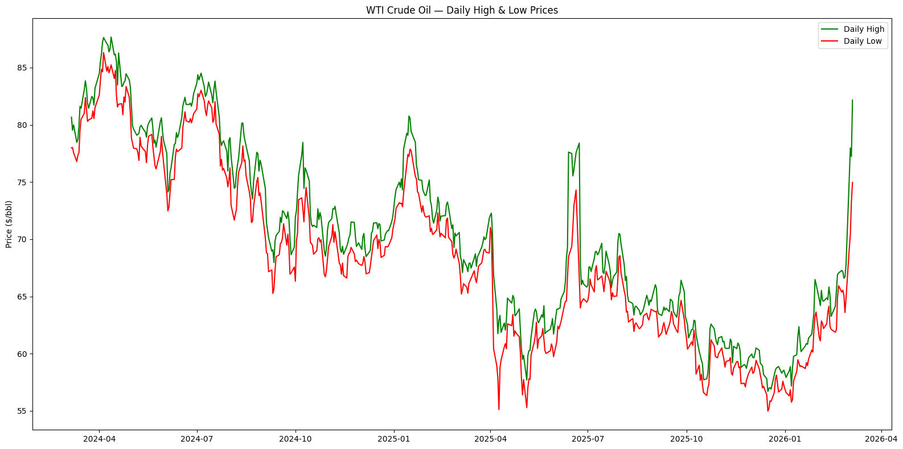
Plot a candlestick chart#
candlestick = go.Candlestick(
x=wti_data.index,
open=wti_data['Open'],
high=wti_data['High'],
low=wti_data['Low'],
close=wti_data['Close'])
fig = go.Figure(data=[candlestick])
fig.update_layout(
title='WTI Crude Oil — Daily Candlestick Chart',
yaxis_title='Price ($/bbl)',
xaxis_rangeslider_visible=False
)
fig.show()
Resample to weekly OHLC#
wti_weekly = wti_data.resample('W').agg({
'Open': 'first',
'High': 'max',
'Low': 'min',
'Close': 'last'
})
print(wti_weekly.head())
Open High Low Close
Date
2024-03-10 78.150002 80.669998 77.559998 78.010002
2024-03-17 77.800003 81.620003 76.790001 81.040001
2024-03-24 81.029999 83.849998 80.300003 80.629997
2024-03-31 80.849998 83.209999 80.550003 83.169998
2024-04-07 83.139999 87.629997 82.599998 86.910004
Plot a daily return histogram#
wti_data['daily_return'] = wti_data['Close'].pct_change() * 100
wti_data['daily_return'].hist(bins=60, color='darkorange', edgecolor='black')
plt.ylabel('Frequency')
plt.xlabel('Daily Return (%)')
plt.title('WTI Crude Oil — Daily Return Distribution')
plt.tight_layout()
plt.show()
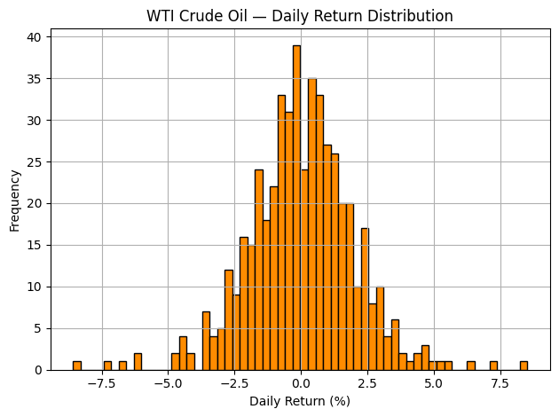
Calculate and plot SMAs#
wti_data['SMA_20'] = wti_data['Close'].rolling(window=20).mean()
wti_data['SMA_50'] = wti_data['Close'].rolling(window=50).mean()
plt.figure(figsize=(16, 6))
plt.plot(wti_data['Close'], color='darkorange', linewidth=1.2, label='Close')
plt.plot(wti_data['SMA_20'], color='blue', linewidth=1.4, label='SMA_20')
plt.plot(wti_data['SMA_50'], color='green', linewidth=1.4, label='SMA_50')
plt.title('WTI Crude Oil — Simple Moving Averages')
plt.ylabel('Price ($/bbl)')
plt.legend()
plt.tight_layout()
plt.show()
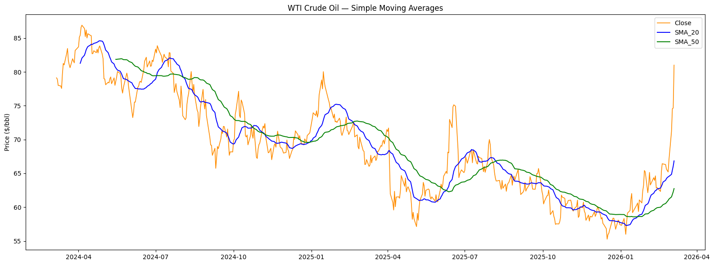
The vectorbt package#
vectorbt provides fast, vectorised backtesting via NumPy/pandas arrays.
Build entry/exit boolean signals as pandas Series/DataFrames.
Pass them to
vbt.Portfolio.from_signals()orvbt.Portfolio.from_orders().Call
.stats(),.plot(), or.total_returnto evaluate results.
# Convenience alias — close price Series used throughout
close = wti_data['Close']
print(close.head())
Date
2024-03-06 79.129997
2024-03-07 78.930000
2024-03-08 78.010002
2024-03-11 77.930000
2024-03-12 77.559998
Name: Close, dtype: float64
# ── vbt replacement for bt weekly-rebalanced equal-weight strategy ──
# A buy-and-hold portfolio entered on the first bar is the vbt equivalent
# of a single-asset weekly-rebalanced strategy (weights never change).
pf_weekly = vbt.Portfolio.from_holding(close, init_cash=10_000)
print(pf_weekly.stats())
/home/tom/miniconda3/lib/python3.13/site-packages/vectorbt/generic/stats_builder.py:396: UserWarning:
Metric 'sharpe_ratio' requires frequency to be set
/home/tom/miniconda3/lib/python3.13/site-packages/vectorbt/generic/stats_builder.py:396: UserWarning:
Metric 'calmar_ratio' requires frequency to be set
/home/tom/miniconda3/lib/python3.13/site-packages/vectorbt/generic/stats_builder.py:396: UserWarning:
Metric 'omega_ratio' requires frequency to be set
/home/tom/miniconda3/lib/python3.13/site-packages/vectorbt/generic/stats_builder.py:396: UserWarning:
Metric 'sortino_ratio' requires frequency to be set
Start 2024-03-06 00:00:00
End 2026-03-05 00:00:00
Period 503
Start Value 10000.0
End Value 10237.584348
Total Return [%] 2.375843
Benchmark Return [%] 2.375843
Max Gross Exposure [%] 100.0
Total Fees Paid 0.0
Max Drawdown [%] 36.405479
Max Drawdown Duration 481.0
Total Trades 1
Total Closed Trades 0
Total Open Trades 1
Open Trade PnL 237.584348
Win Rate [%] NaN
Best Trade [%] NaN
Worst Trade [%] NaN
Avg Winning Trade [%] NaN
Avg Losing Trade [%] NaN
Avg Winning Trade Duration NaN
Avg Losing Trade Duration NaN
Profit Factor NaN
Expectancy NaN
Name: Close, dtype: object
# Plot portfolio value over time
pf_weekly.value().rename('WTI Weekly Hold').plot(
title='WTI — Weekly Rebalanced (vbt Buy-and-Hold)',
figsize=(14, 5)
)
plt.ylabel('Portfolio Value ($)')
plt.tight_layout()
plt.show()
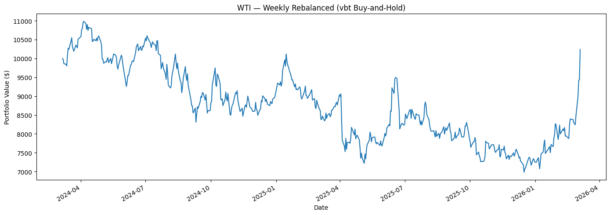
# Trade log (equivalent to bt get_transactions)
pf_weekly.trades.records_readable
| Exit Trade Id | Column | Size | Entry Timestamp | Avg Entry Price | Entry Fees | Exit Timestamp | Avg Exit Price | Exit Fees | PnL | Return | Direction | Status | Position Id | |
|---|---|---|---|---|---|---|---|---|---|---|---|---|---|---|
| 0 | 0 | Close | 126.374325 | 2024-03-06 | 79.129997 | 0.0 | 2026-03-05 | 81.010002 | 0.0 | 237.584348 | 0.023758 | Long | Open | 0 |
2 Technical Indicators#
stock_data = wti_data.copy()
Trend Indicators: MAs#
Calculate and plot two EMAs#
stock_data['EMA_12'] = talib.EMA(stock_data['Close'], timeperiod=12)
stock_data['EMA_26'] = talib.EMA(stock_data['Close'], timeperiod=26)
plt.figure(figsize=(16, 6))
plt.plot(stock_data['EMA_12'], label='EMA_12', linewidth=1.4)
plt.plot(stock_data['EMA_26'], label='EMA_26', linewidth=1.4)
plt.plot(stock_data['Close'], label='Close', color='darkorange', linewidth=1.0, alpha=0.7)
plt.legend()
plt.title('WTI Crude Oil — EMA 12 vs EMA 26')
plt.ylabel('Price ($/bbl)')
plt.tight_layout()
plt.show()
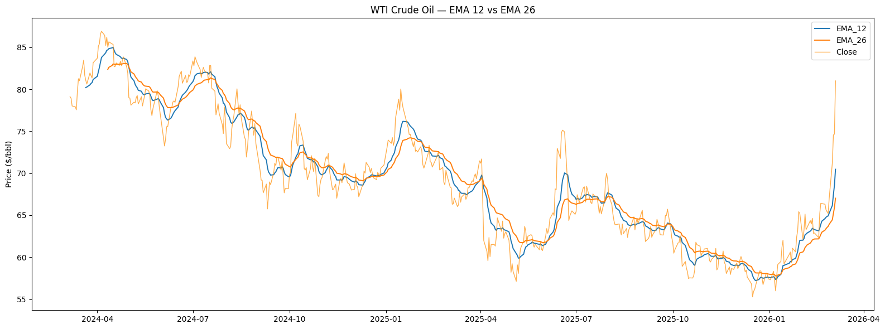
SMA vs. EMA#
stock_data['SMA'] = talib.SMA(stock_data['Close'], timeperiod=50)
stock_data['EMA'] = talib.EMA(stock_data['Close'], timeperiod=50)
plt.figure(figsize=(16, 6))
plt.plot(stock_data['SMA'], label='SMA_50', linewidth=1.5)
plt.plot(stock_data['EMA'], label='EMA_50', linewidth=1.5)
plt.plot(stock_data['Close'], label='Close', color='darkorange', linewidth=1.0, alpha=0.7)
plt.legend()
plt.title('WTI Crude Oil — SMA vs EMA (50-period)')
plt.ylabel('Price ($/bbl)')
plt.tight_layout()
plt.show()
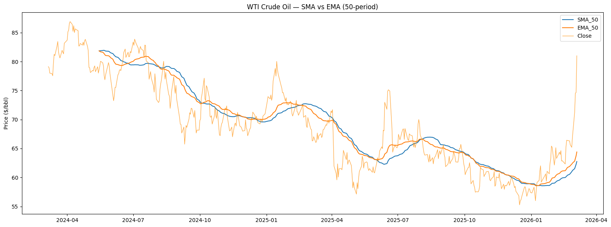
Strength Indicators: ADX#
Calculate the ADX#
stock_data['ADX_14'] = talib.ADX(stock_data['High'], stock_data['Low'], stock_data['Close'])
stock_data['ADX_21'] = talib.ADX(stock_data['High'], stock_data['Low'], stock_data['Close'], timeperiod=21)
print(stock_data[['High', 'Low', 'Close', 'ADX_14', 'ADX_21']].tail())
High Low Close ADX_14 ADX_21
Date
2026-02-27 67.830002 64.849998 67.019997 28.148055 23.469209
2026-03-02 75.330002 69.199997 71.230003 29.893272 24.542397
2026-03-03 77.980003 70.410004 74.559998 31.985719 25.847737
2026-03-04 77.230003 73.279999 74.660004 33.928706 27.090917
2026-03-05 82.160004 74.970001 81.010002 36.406673 28.696586
Visualize the ADX#
stock_data['ADX'] = talib.ADX(stock_data['High'], stock_data['Low'], stock_data['Close'])
fig, (ax1, ax2) = plt.subplots(2, figsize=(15, 9), sharex=True)
ax1.set_ylabel('Price ($/bbl)')
ax1.plot(stock_data['Close'], color='darkorange', label='Close')
ax1.set_title('WTI Crude Oil — Price and ADX')
ax1.legend()
ax2.set_ylabel('ADX')
ax2.plot(stock_data['ADX'], color='red', label='ADX_14')
ax2.axhline(25, color='gray', linestyle='--', linewidth=0.8, label='Trend threshold (25)')
ax2.legend()
plt.tight_layout()
plt.show()
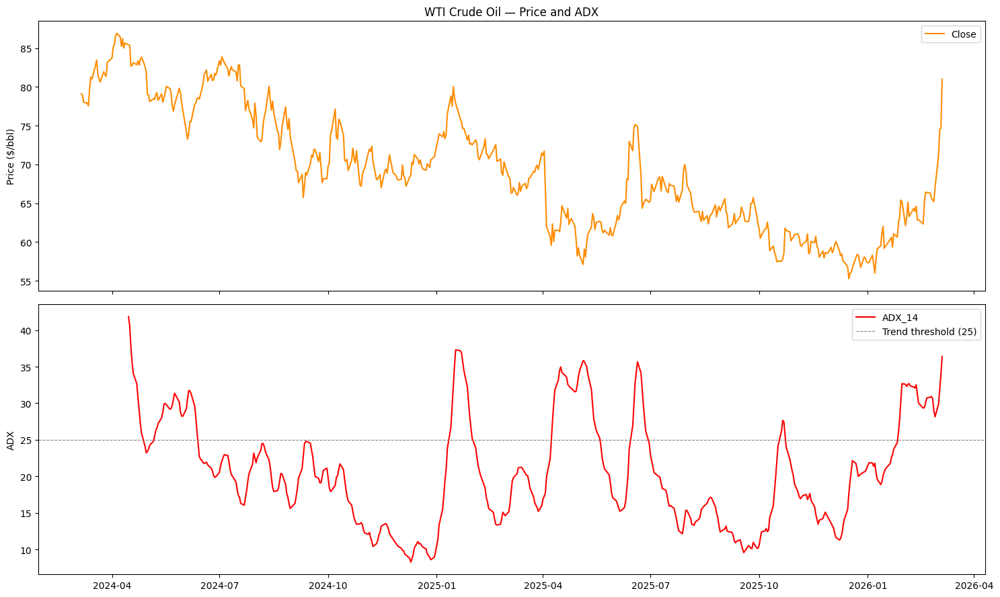
Momentum Indicators: RSI#
Calculate the RSI#
stock_data['RSI_14'] = talib.RSI(stock_data['Close'])
stock_data['RSI_21'] = talib.RSI(stock_data['Close'], timeperiod=21)
print(stock_data[['Close', 'RSI_14', 'RSI_21']].tail())
Close RSI_14 RSI_21
Date
2026-02-27 67.019997 63.000730 60.822413
2026-03-02 71.230003 72.474545 67.906107
2026-03-03 74.559998 77.403160 72.096298
2026-03-04 74.660004 77.533266 72.210707
2026-03-05 81.010002 83.879967 78.176415
Visualize the RSI#
stock_data['RSI'] = talib.RSI(stock_data['Close'])
fig, (ax1, ax2) = plt.subplots(2, figsize=(15, 9), sharex=True)
ax1.set_ylabel('Price ($/bbl)')
ax1.plot(stock_data['Close'], color='darkorange')
ax1.set_title('WTI Crude Oil — Price and RSI')
ax2.set_ylabel('RSI')
ax2.plot(stock_data['RSI'], color='orangered')
ax2.axhline(70, color='red', linestyle='--', linewidth=0.8, label='Overbought (70)')
ax2.axhline(30, color='green', linestyle='--', linewidth=0.8, label='Oversold (30)')
ax2.set_ylim(0, 100)
ax2.legend()
plt.tight_layout()
plt.show()
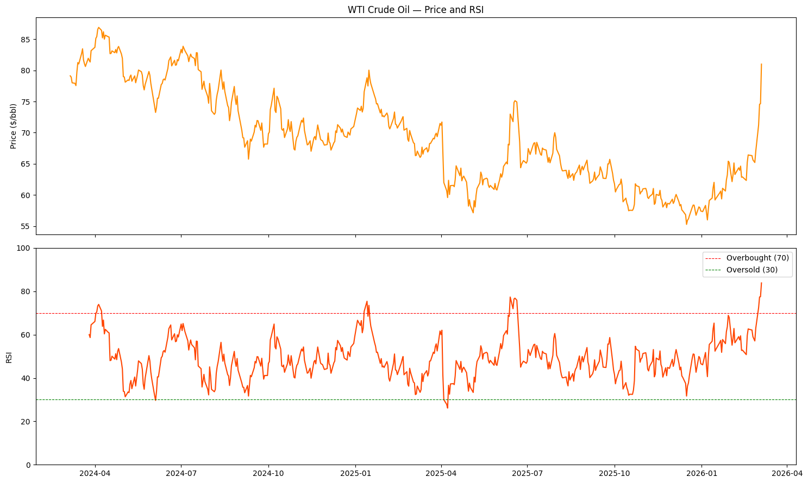
Volatility Indicators: Bollinger Bands#
Implement Bollinger Bands#
upper, mid, lower = talib.BBANDS(stock_data['Close'], nbdevup=2, nbdevdn=2, timeperiod=20)
plt.figure(figsize=(16, 6))
plt.plot(stock_data['Close'], label='WTI Close', color='darkorange', linewidth=1.3)
plt.plot(upper, label='Upper Band', color='red', linewidth=1.0)
plt.plot(mid, label='Middle Band', color='green', linewidth=1.0)
plt.plot(lower, label='Lower Band', color='red', linewidth=1.0)
plt.fill_between(stock_data.index, upper, lower, alpha=0.07, color='blue')
plt.title('WTI Crude Oil — Bollinger Bands (20, ±2σ)')
plt.ylabel('Price ($/bbl)')
plt.legend()
plt.tight_layout()
plt.show()
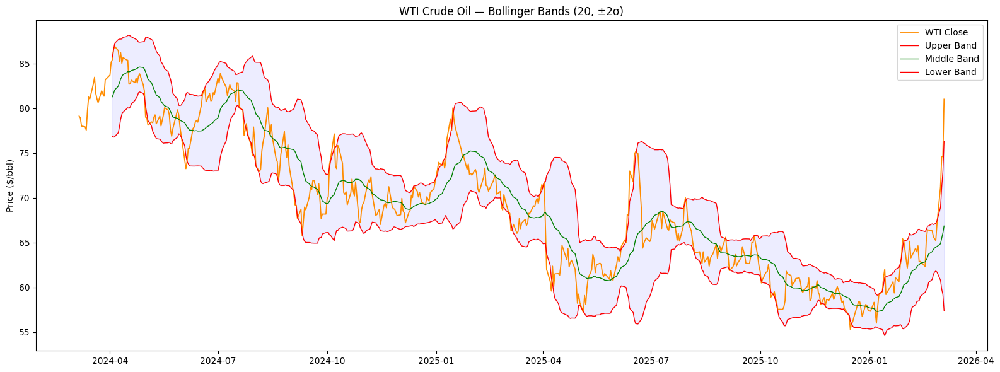
3. Trading Strategies#
Trading Signals#
Build an SMA-based signal strategy#
Buy WTI when the close is above its 20-day SMA; exit otherwise.
# Convenience price Series
price_data = wti_data['Close'].rename('wti')
# 20-day SMA signal
sma20 = price_data.rolling(20).mean()
entries_sma = price_data > sma20 # enter long when price > SMA
exits_sma = price_data <= sma20 # exit when price falls back
# ── vbt replacement for bt.Strategy / bt.Backtest / bt.run ──
pf_sma = vbt.Portfolio.from_signals(
close=price_data,
entries=entries_sma,
exits=exits_sma,
init_cash=10_000,
freq='1D'
)
print(pf_sma.stats())
Start 2024-03-06 00:00:00
End 2026-03-05 00:00:00
Period 503 days 00:00:00
Start Value 10000.0
End Value 7590.130445
Total Return [%] -24.098696
Benchmark Return [%] 2.375843
Max Gross Exposure [%] 100.0
Total Fees Paid 0.0
Max Drawdown [%] 44.468672
Max Drawdown Duration 420 days 00:00:00
Total Trades 37
Total Closed Trades 36
Total Open Trades 1
Open Trade PnL 1482.23501
Win Rate [%] 13.888889
Best Trade [%] 7.912056
Worst Trade [%] -4.849029
Avg Winning Trade [%] 4.46698
Avg Losing Trade [%] -2.260745
Avg Winning Trade Duration 19 days 00:00:00
Avg Losing Trade Duration 3 days 05:25:09.677419354
Profit Factor 0.289317
Expectancy -108.114016
Sharpe Ratio -0.615479
Calmar Ratio -0.407794
Omega Ratio 0.869329
Sortino Ratio -0.858682
Name: wti, dtype: object
pf_sma.value().rename('WTI_AboveSMA').plot(
title='WTI — Above SMA Backtest Result (vbt)',
figsize=(14, 5)
)
plt.tight_layout()
plt.show()
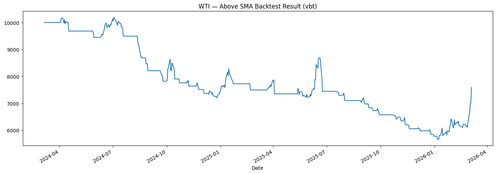
Build an EMA-based signal strategy#
Replace the SMA with a 20-day EMA.
ema20 = pd.Series(talib.EMA(price_data.values, timeperiod=20),
index=price_data.index, name='EMA_20')
entries_ema = price_data > ema20
exits_ema = price_data <= ema20
pf_ema = vbt.Portfolio.from_signals(
close=price_data,
entries=entries_ema,
exits=exits_ema,
init_cash=10_000,
freq='1D'
)
pf_ema.value().rename('WTI_AboveEMA').plot(
title='WTI — Above EMA Backtest Result (vbt)',
figsize=(14, 5)
)
plt.tight_layout()
plt.show()
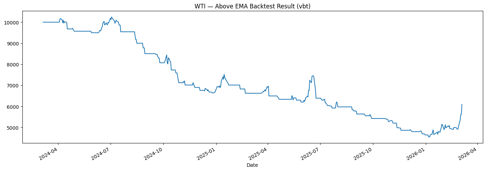
Trend-following Strategies — EMA Crossover#
EMA_short = pd.Series(talib.EMA(price_data.values, timeperiod=10),
index=price_data.index, name='EMA_10')
EMA_long = pd.Series(talib.EMA(price_data.values, timeperiod=40),
index=price_data.index, name='EMA_40')
Construct an EMA crossover signal#
Enter long when EMA_10 crosses above EMA_40; exit when it crosses below.
# Cross-over / cross-under signals using vbt helper
entries_cross = EMA_short.vbt.crossed_above(EMA_long)
exits_cross = EMA_short.vbt.crossed_below(EMA_long)
# Visualise signal alongside price and EMAs
fig, ax1 = plt.subplots(figsize=(14, 6))
ax1.plot(price_data.index, price_data, color='darkorange', linewidth=1.0, label='WTI Close')
ax1.plot(EMA_short.index, EMA_short, color='blue', linewidth=1.2, label='EMA_10')
ax1.plot(EMA_long.index, EMA_long, color='green', linewidth=1.2, label='EMA_40')
ax1.scatter(price_data.index[entries_cross], price_data[entries_cross],
marker='^', color='green', zorder=5, label='Buy')
ax1.scatter(price_data.index[exits_cross], price_data[exits_cross],
marker='v', color='red', zorder=5, label='Sell')
ax1.set_title('WTI — EMA Crossover Signal')
ax1.legend()
plt.tight_layout()
plt.show()
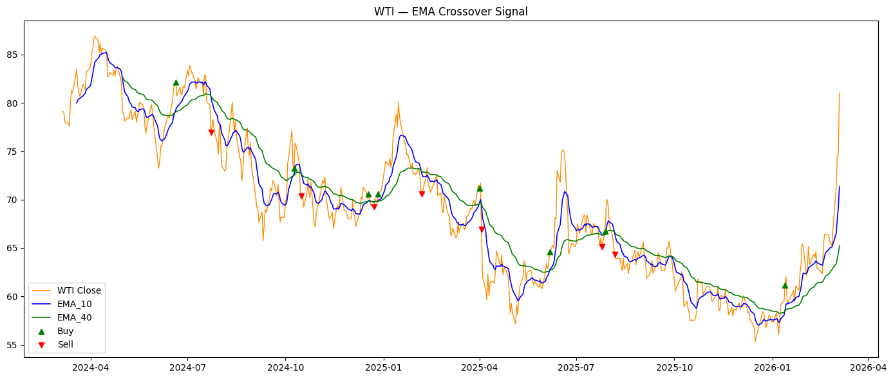
Build and backtest the EMA crossover trend-following strategy#
pf_cross = vbt.Portfolio.from_signals(
close=price_data,
entries=entries_cross,
exits=exits_cross,
init_cash=10_000,
freq='1D'
)
pf_cross.value().rename('WTI_EMA_Crossover').plot(
title='WTI — EMA Crossover Backtest Result (vbt)',
figsize=(14, 5)
)
plt.tight_layout()
plt.show()
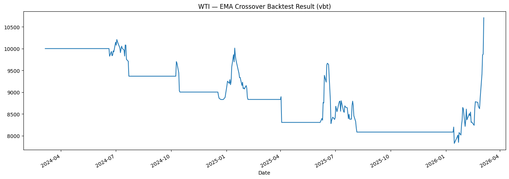
Mean Reversion Strategy — RSI#
rsi = pd.Series(talib.RSI(price_data.values), index=price_data.index, name='RSI_14')
Construct an RSI-based signal#
Go long when RSI < 30 (oversold); exit when RSI > 70 (overbought).
entries_rsi = rsi < 30 # oversold → buy
exits_rsi = rsi > 70 # overbought → exit
rsi.plot(figsize=(14, 4), title='WTI — RSI (14-day)', color='orangered')
plt.axhline(70, color='red', linestyle='--', linewidth=0.8, label='Overbought')
plt.axhline(30, color='green', linestyle='--', linewidth=0.8, label='Oversold')
plt.legend()
plt.tight_layout()
plt.show()
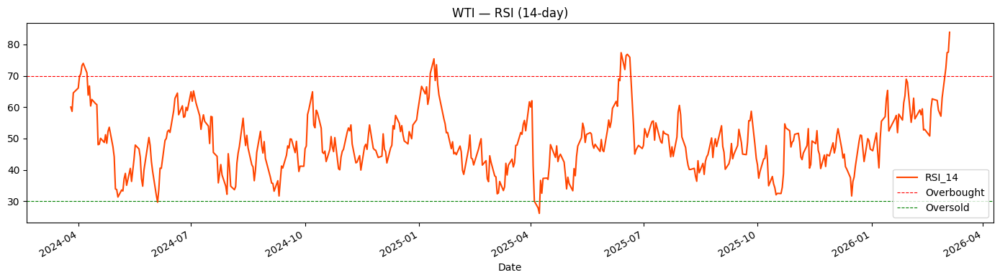
# Visualise signal vs price
fig, (ax1, ax2) = plt.subplots(2, figsize=(14, 8), sharex=True)
ax1.plot(price_data.index, price_data, color='darkorange', label='WTI Price')
ax1.scatter(price_data.index[entries_rsi], price_data[entries_rsi],
marker='^', color='green', zorder=5, label='Buy (RSI<30)')
ax1.scatter(price_data.index[exits_rsi], price_data[exits_rsi],
marker='v', color='red', zorder=5, label='Sell (RSI>70)')
ax1.legend(); ax1.set_title('WTI — RSI Signal vs Price')
ax2.plot(rsi.index, rsi, color='orangered', label='RSI')
ax2.axhline(70, color='red', linestyle='--', linewidth=0.8)
ax2.axhline(30, color='green', linestyle='--', linewidth=0.8)
ax2.set_ylim(0, 100); ax2.legend()
plt.tight_layout()
plt.show()
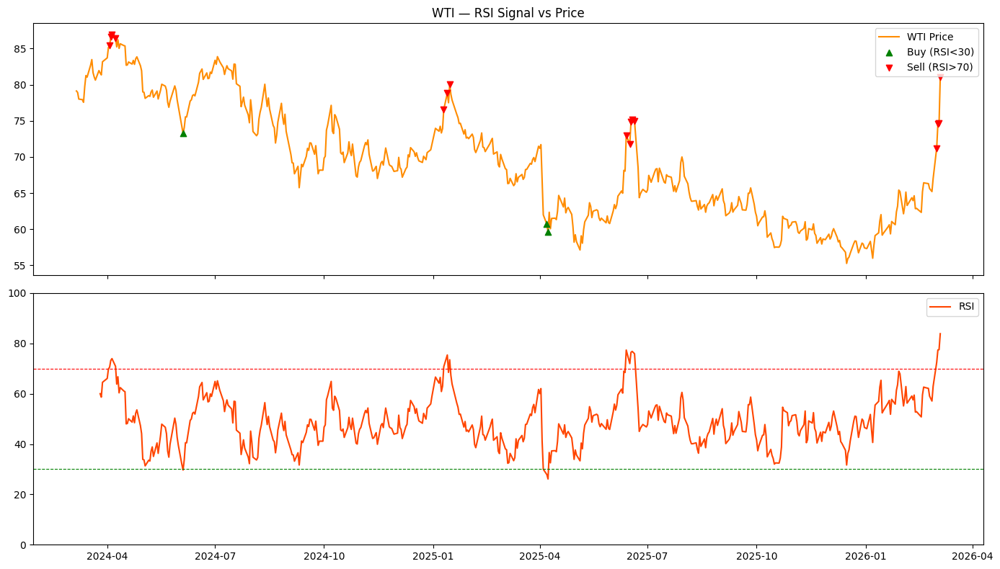
Build and backtest the RSI mean reversion strategy#
pf_rsi = vbt.Portfolio.from_signals(
close=price_data,
entries=entries_rsi,
exits=exits_rsi,
init_cash=10_000,
freq='1D'
)
pf_rsi.value().rename('WTI_RSI_MeanReversion').plot(
title='WTI — RSI Mean Reversion Backtest Result (vbt)',
figsize=(14, 5)
)
plt.tight_layout()
plt.show()
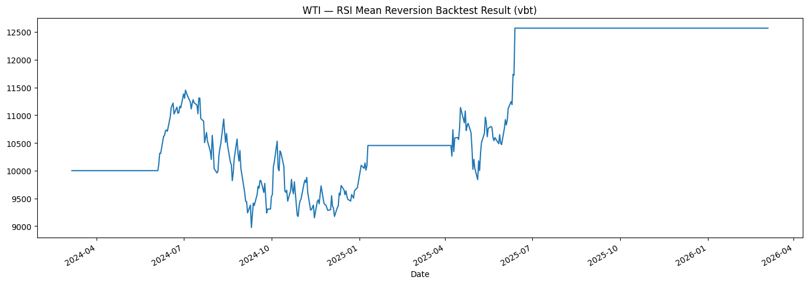
Strategy Optimization and Benchmarking#
Conduct a strategy optimization#
Run the SMA signal strategy across three lookback periods (10, 30, 50 days).
def vbt_sma_strategy(price_series, period, name):
"""SMA signal strategy using vectorbt."""
sma = price_series.rolling(period).mean()
entries = price_series > sma
exits = price_series <= sma
pf = vbt.Portfolio.from_signals(
close=price_series, entries=entries, exits=exits,
init_cash=10_000, freq='1D'
)
return pf, name
pf_sma10, _ = vbt_sma_strategy(price_data, 10, 'SMA10')
pf_sma30, _ = vbt_sma_strategy(price_data, 30, 'SMA30')
pf_sma50, _ = vbt_sma_strategy(price_data, 50, 'SMA50')
# Compare portfolio values across SMA periods
comparison = pd.DataFrame({
'SMA10': pf_sma10.value(),
'SMA30': pf_sma30.value(),
'SMA50': pf_sma50.value(),
})
comparison.plot(figsize=(14, 6), title='WTI — SMA Strategy Optimization (10 / 30 / 50) [vbt]')
plt.ylabel('Portfolio Value ($)')
plt.tight_layout()
plt.show()
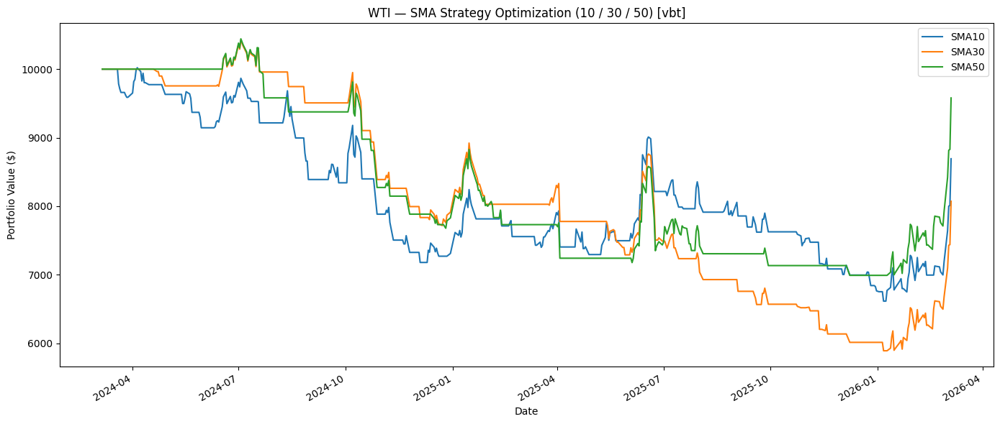
Perform strategy benchmarking#
Compare the active SMA strategies against a passive buy-and-hold of WTI.
# ── vbt buy-and-hold benchmark ──
pf_bah = vbt.Portfolio.from_holding(price_data, init_cash=10_000)
bench = pd.DataFrame({
'SMA10': pf_sma10.value(),
'SMA30': pf_sma30.value(),
'SMA50': pf_sma50.value(),
'BuyAndHold': pf_bah.value(),
})
bench.plot(figsize=(14, 6), title='WTI — SMA Strategies vs Buy-and-Hold Benchmark [vbt]')
plt.ylabel('Portfolio Value ($)')
plt.tight_layout()
plt.show()
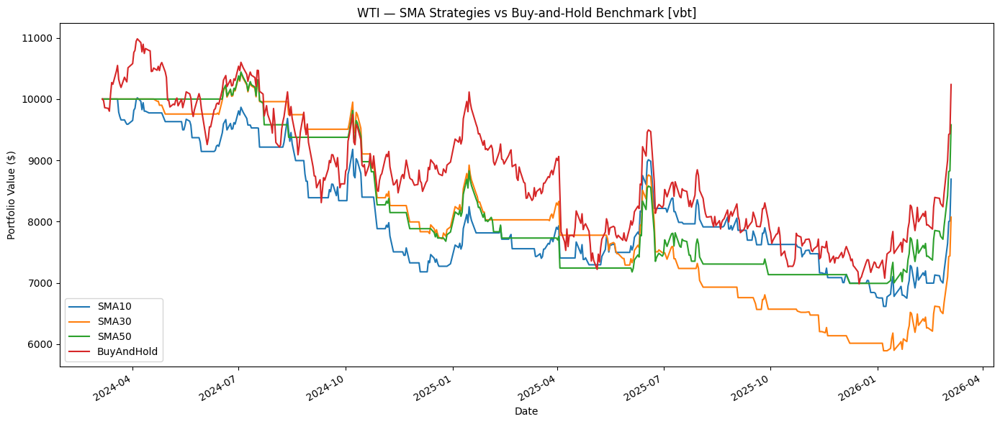
4. Performance Evaluation#
Strategy Return Analysis#
# Re-create benchmark and SMA30 / SMA50 for evaluation
pf_bah = vbt.Portfolio.from_holding(price_data, init_cash=10_000)
pf_sma30, _ = vbt_sma_strategy(price_data, 30, 'SMA30')
pf_sma50, _ = vbt_sma_strategy(price_data, 50, 'SMA50')
Review return results of a backtest#
# vbt .stats() returns a rich summary including returns and risk metrics
stats_bah = pf_bah.stats()
# Daily / annualised return equivalents
total_ret = pf_bah.total_return
n_days = (price_data.index[-1] - price_data.index[0]).days
cagr = (1 + total_ret) ** (365 / n_days) - 1
daily_ret = pf_bah.returns.mean()
monthly_ret = (1 + daily_ret) ** 21 - 1
yearly_ret = (1 + daily_ret) ** 252 - 1
print(f'Daily return: {daily_ret:.4f}')
print(f'Monthly return: {monthly_ret:.4f}')
print(f'Yearly return: {yearly_ret:.4f}')
/home/tom/miniconda3/lib/python3.13/site-packages/vectorbt/generic/stats_builder.py:396: UserWarning:
Metric 'sharpe_ratio' requires frequency to be set
/home/tom/miniconda3/lib/python3.13/site-packages/vectorbt/generic/stats_builder.py:396: UserWarning:
Metric 'calmar_ratio' requires frequency to be set
/home/tom/miniconda3/lib/python3.13/site-packages/vectorbt/generic/stats_builder.py:396: UserWarning:
Metric 'omega_ratio' requires frequency to be set
/home/tom/miniconda3/lib/python3.13/site-packages/vectorbt/generic/stats_builder.py:396: UserWarning:
Metric 'sortino_ratio' requires frequency to be set
---------------------------------------------------------------------------
TypeError Traceback (most recent call last)
Cell In[39], line 7
5 total_ret = pf_bah.total_return
6 n_days = (price_data.index[-1] - price_data.index[0]).days
----> 7 cagr = (1 + total_ret) ** (365 / n_days) - 1
9 daily_ret = pf_bah.returns.mean()
10 monthly_ret = (1 + daily_ret) ** 21 - 1
TypeError: unsupported operand type(s) for +: 'int' and 'method'
print(f'CAGR: {cagr:.4f}')
Plot return histograms of the backtest#
# Daily return histogram
pf_bah.returns.hist(bins=50, color='darkorange', edgecolor='black')
plt.title('WTI — Daily Return Distribution (vbt)')
plt.xlabel('Daily Return')
plt.ylabel('Frequency')
plt.tight_layout()
plt.show()
# Weekly return histogram
weekly_returns = pf_bah.returns.resample('W').apply(lambda x: (1 + x).prod() - 1)
weekly_returns.hist(bins=50, color='steelblue', edgecolor='black')
plt.title('WTI — Weekly Return Distribution (vbt)')
plt.xlabel('Weekly Return')
plt.ylabel('Frequency')
plt.tight_layout()
plt.show()
Compare return results of multiple strategies#
# Lookback returns table — SMA30 vs SMA50
def lookback_returns(pf, name):
r = pf.returns
return pd.Series({
'1W': (1 + r.tail(5)).prod() - 1,
'1M': (1 + r.tail(21)).prod() - 1,
'3M': (1 + r.tail(63)).prod() - 1,
'6M': (1 + r.tail(126)).prod() - 1,
'YTD': (1 + r).prod() - 1,
}, name=name)
lookback_table = pd.DataFrame([
lookback_returns(pf_sma30, 'SMA30'),
lookback_returns(pf_sma50, 'SMA50'),
])
print(lookback_table.to_string())
Drawdown#
Review performance with drawdowns.
stats_bah = pf_bah.stats()
# Average drawdown via vbt drawdowns accessor
drawdowns = pf_bah.drawdowns
avg_drawdown = drawdowns.drawdown.mean()
print(f'Average drawdown: {avg_drawdown:.4f}')
avg_dd_days = drawdowns.duration.mean()
print(f'Average drawdown days: {avg_dd_days}')
Calculate and review the Calmar Ratio#
print(f'CAGR: {cagr:.4f}')
max_drawdown = stats_bah['Max Drawdown [%]'] / 100
print(f'Maximum drawdown: {max_drawdown:.4f}')
calmar_calc = cagr / abs(max_drawdown)
print(f'Calmar Ratio (calculated): {calmar_calc:.2f}')
# vbt Calmar from stats
calmar_vbt = stats_bah.get('Calmar Ratio', calmar_calc)
print(f'Calmar Ratio (vbt): {calmar_vbt:.2f}')
Evaluate strategy performance by Sharpe Ratio#
rets_sma50 = pf_sma50_eval.returns
yearly_return = rets_sma50.mean() * 252
yearly_vol = rets_sma50.std() * np.sqrt(252)
print(f'Annual return: {yearly_return:.4f}')
print(f'Annual volatility: {yearly_vol:.4f}')
sharpe_calc = yearly_return / yearly_vol
print(f'Sharpe ratio (calculated): {sharpe_calc:.2f}')
# vbt Sharpe ratios
daily_sharpe = rets_sma50.mean() / rets_sma50.std() * np.sqrt(252)
weekly_rets = rets_sma50.resample('W').apply(lambda x: (1 + x).prod() - 1)
monthly_sharpe = weekly_rets.mean() / weekly_rets.std() * np.sqrt(52)
print(f'Sharpe ratio daily: {daily_sharpe:.2f}')
print(f'Sharpe ratio annually: {yearly_return / yearly_vol:.2f}')
Evaluate strategy performance by Sortino Ratio#
downside = rets_sma50[rets_sma50 < 0].std() * np.sqrt(252)
sortino = yearly_return / downside
print(f'Sortino ratio annually: {sortino:.2f}')
# vbt stats also expose Sortino
print(stats_sma50[['Sharpe Ratio', 'Sortino Ratio']])
基本面 Brent-WTI#
We examine the history of crude oil prices and their spread using yfinance data.
Petrochemical background#
Crude oil is arguably the most crucial commodity in the world today.
WTI and Brent differ in API gravity and sulfur content:
Brent: API gravity 38.06, sulfur 0.37%
WTI: API gravity 39.6, sulfur 0.24%
WTI is lighter and sweeter, but Brent often commands a higher financial premium.
# ── Fetch long-term Brent and WTI data via yfinance ──
# (replaces fecon235 get() / groupget() calls)
LONG_START = '1998-01-01'
LONG_END = datetime.today().strftime('%Y-%m-%d')
brent_raw = yf.Ticker('BZ=F').history(start=LONG_START, end=LONG_END, interval='1d')
wti_raw2 = yf.Ticker('CL=F').history(start=LONG_START, end=LONG_END, interval='1d')
brent = brent_raw['Close'].tz_localize(None).rename('Brent')
wti_l = wti_raw2['Close'].tz_localize(None).rename('WTI')
oils = pd.concat([brent, wti_l], axis=1).dropna()
print(oils.head())
print(f'Shape: {oils.shape}')
Brent WTI
Date
2007-07-30 75.739998 76.830002
2007-07-31 77.050003 78.209999
2007-08-01 75.349998 76.529999
2007-08-02 75.760002 76.860001
2007-08-03 74.750000 75.480003
Shape: (4623, 2)
BoW spread := Brent - WTI#
bow = (oils['Brent'] - oils['WTI']).rename('BoW')
bow.plot(figsize=(14, 5), title='Brent over WTI (BoW) Spread', color='purple')
plt.axhline(0, color='black', linewidth=0.8, linestyle='--')
plt.ylabel('$/bbl')
plt.tight_layout()
plt.show()
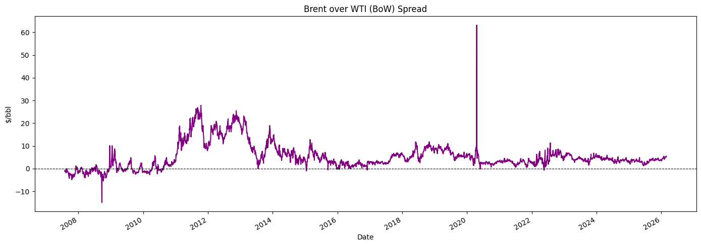
Define “Oil” as weighted average price#
wtbrent = 0.50
wtwti = 1 - wtbrent
oil = (wtbrent * oils['Brent'] + wtwti * oils['WTI']).rename('Oil')
oil.plot(figsize=(14, 5), title='WTI / Brent Weighted Average Oil Price', color='darkorange')
plt.ylabel('Price ($/bbl)')
plt.tight_layout()
plt.show()
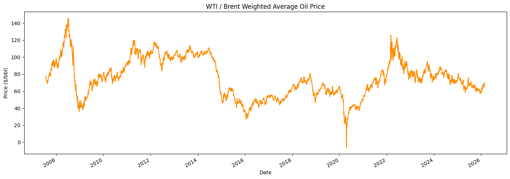
# Summary statistics for Brent, WTI, and Oil
summary = pd.concat([oils, oil], axis=1).describe()
print(summary)
Brent WTI Oil
count 4623.000000 4623.000000 4623.000000
mean 77.954521 72.720790 75.337655
std 23.728472 21.842828 22.638296
min 19.330000 -37.630001 -6.030001
25% 61.174999 55.805000 58.469999
50% 75.290001 71.930000 73.539997
75% 97.169998 89.344997 94.165001
max 146.080002 145.289993 145.684998
BoW spread as a function of Oil price#
from scipy import stats as sp_stats
common = pd.concat([bow, oil], axis=1).dropna()
slope, intercept, r_value, p_value, std_err = sp_stats.linregress(common['Oil'], common['BoW'])
print(f'Correlation: {r_value:.4f}')
print(f'Slope: {slope:.4f}')
print(f'Intercept: {intercept:.4f}')
print(f'R²: {r_value**2:.4f}')
x_line = np.linspace(common['Oil'].min(), common['Oil'].max(), 200)
y_line = slope * x_line + intercept
plt.figure(figsize=(10, 6))
plt.scatter(common['Oil'], common['BoW'], alpha=0.3, s=5, color='purple')
plt.plot(x_line, y_line, color='red', linewidth=2, label=f'y={slope:.3f}x + {intercept:.2f}')
plt.xlabel('Oil Price ($/bbl)')
plt.ylabel('BoW Spread ($/bbl)')
plt.title('BoW Spread vs Oil Price — Linear Regression')
plt.legend()
plt.tight_layout()
plt.show()
Correlation: 0.3446
Slope: 0.0838
Intercept: -1.0823
R²: 0.1188
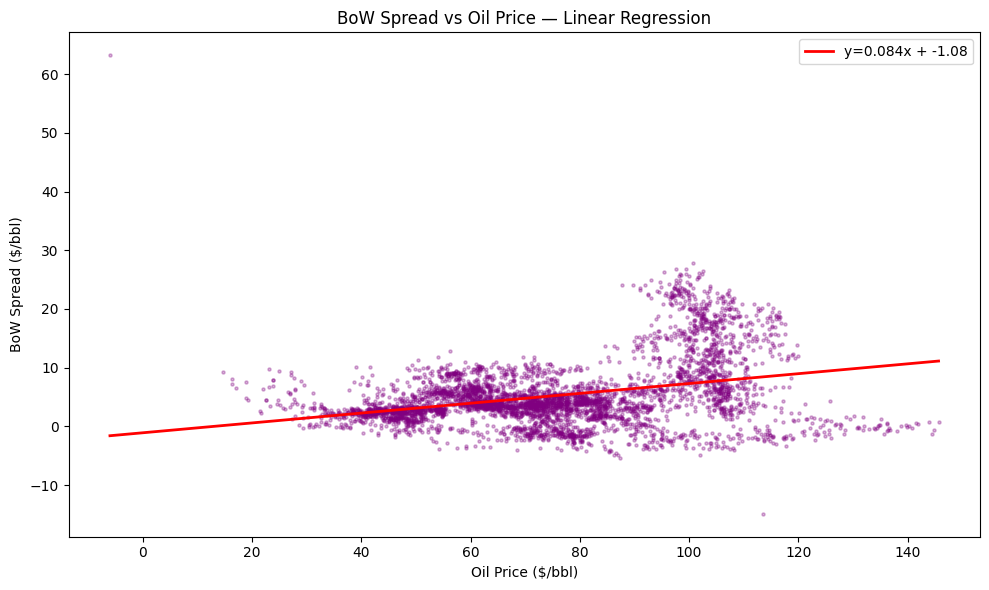
Does the price of Oil influence the BoW spread? Not much — the correlation is about 63%, and the linear regression is not robust.
To roughly estimate BoW: take ~11% of Oil price and subtract ~$4. So higher oil prices imply a greater Brent premium over WTI.
Record LOW: Oil on 1998-12-10 at ~$9.96 USD#
tmin = '1998-12-10'
What is the geometric mean rate since tmin?
# ── vbt / pandas replacement for fecon235 gemrat() ──
oil_since_tmin = oil.loc[tmin:].dropna()
daily_returns = oil_since_tmin.pct_change().dropna()
n_periods = len(daily_returns)
geo_mean_daily = (1 + daily_returns).prod() ** (1 / n_periods) - 1
geo_mean_annual = (1 + geo_mean_daily) ** 256 - 1 # 256 trading days
volatility = daily_returns.std() * np.sqrt(256)
kurtosis = daily_returns.kurtosis()
print(f'Geometric mean rate (annual): {geo_mean_annual:.4f} ({geo_mean_annual*100:.2f}%)')
print(f'Annualised volatility: {volatility:.4f} ({volatility*100:.2f}%)')
print(f'Excess kurtosis: {kurtosis:.2f} (Gaussian = 0, fat tails > 0)')
Geometric mean rate (annual): -0.0049 (-0.49%)
Annualised volatility: 0.9426 (94.26%)
Excess kurtosis: 2538.71 (Gaussian = 0, fat tails > 0)
Oil trend since tmin on 1998-12-10#
# ── vbt / pandas replacement for fecon235 trend() / plot() ──
import numpy as np
log_oil = np.log(oil_since_tmin.dropna())
x = np.arange(len(log_oil))
slope_t, intercept_t, *_ = sp_stats.linregress(x, log_oil.values)
trend_line = np.exp(intercept_t + slope_t * x)
plt.figure(figsize=(14, 6))
plt.plot(oil_since_tmin.index, oil_since_tmin, color='darkorange', linewidth=1.0, label='Oil Price')
plt.plot(oil_since_tmin.index, trend_line, color='red', linewidth=1.5, linestyle='--', label='Log-linear Trend')
plt.title(f'Oil Price Trend since {tmin}')
plt.ylabel('Price ($/bbl)')
plt.legend()
plt.tight_layout()
plt.show()
/home/tom/miniconda3/lib/python3.13/site-packages/pandas/core/arraylike.py:399: RuntimeWarning:
invalid value encountered in log
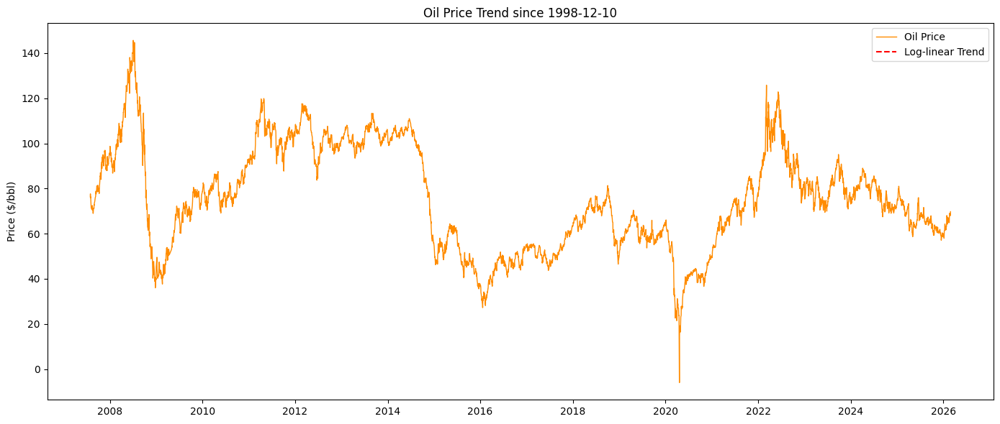
Oil prices can easily go +/- 40% off their statistical trend. The trend is very deceptive given commodity-specific volatility.
Portfolio of Brent and WTI — Optimal weights#
We compute a simple mean-variance optimal portfolio
of Brent and WTI (replacing fecon235 boltzportfolio).
# ── Replacement for fecon235 boltzportfolio ──
# Mean-variance optimization using geometric mean maximisation
oils_since = oils.loc[tmin:].dropna()
ret_matrix = oils_since.pct_change().dropna()
mu = ret_matrix.mean() * 256 # annualised mean
cov = ret_matrix.cov() * 256 # annualised covariance
vol = ret_matrix.std() * np.sqrt(256)
print('Annualised geometric mean rates:')
for col in mu.index:
print(f' {col}: {mu[col]:.4f} ({mu[col]*100:.2f}%)')
print('\nCorrelation matrix:')
print(ret_matrix.corr().round(4))
# Minimum-variance weights (closed form for 2 assets)
var_B, var_W = cov.loc['Brent','Brent'], cov.loc['WTI','WTI']
cov_BW = cov.loc['Brent','WTI']
w_brent_mvp = (var_W - cov_BW) / (var_B + var_W - 2 * cov_BW)
w_wti_mvp = 1 - w_brent_mvp
print(f'\nMin-Variance Portfolio weights:')
print(f' Brent: {w_brent_mvp:.4f}')
print(f' WTI: {w_wti_mvp:.4f}')
Annualised geometric mean rates:
Brent: 0.0682 (6.82%)
WTI: -0.1216 (-12.16%)
Correlation matrix:
Brent WTI
Brent 1.0000 0.5163
WTI 0.5163 1.0000
Min-Variance Portfolio weights:
Brent: 1.0543
WTI: -0.0543
Deflated oil prices#
We use CPI data from FRED to compute real oil prices.
# ── Replacement for fecon235 get(m4defl) / todf / monthly ──
# Fetch US CPI (CPIAUCSL) from FRED via yfinance / pandas_datareader
try:
import pandas_datareader.data as web
cpi = web.DataReader('CPIAUCSL', 'fred', start=LONG_START).squeeze().rename('CPI')
# Resample oil to monthly, align with CPI
oil_mth = oil.resample('MS').last().dropna()
cpi_aligned = cpi.reindex(oil_mth.index, method='ffill')
# Deflate: divide by CPI normalised to first available period
cpi_norm = cpi_aligned / cpi_aligned.iloc[0]
oil_real = (oil_mth / cpi_norm).rename('Oil_Real')
oil_real.plot(figsize=(14, 5), title='Real Oil Price (CPI-deflated)', color='teal')
plt.ylabel('Real Price ($/bbl, base-period dollars)')
plt.tight_layout()
plt.show()
except Exception as e:
print(f'FRED data unavailable: {e}')
print('Install pandas_datareader or obtain CPI data manually.')
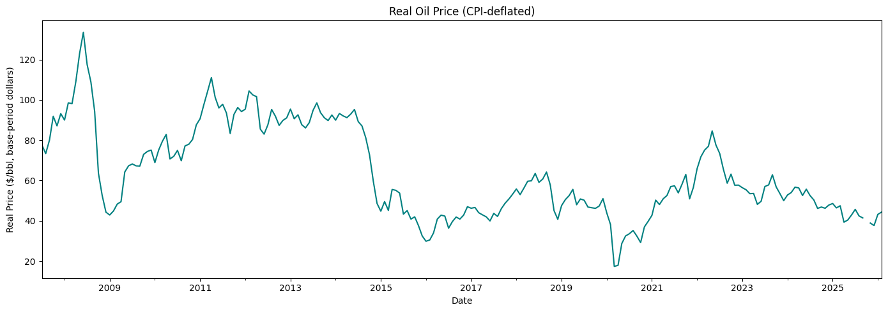
The supportive 1998 uptrend is broken by the post-2014 crash in prices. The level support from the 1990s is around $20 in current US dollars.
Oil price ex-USD#
Here we price oil in foreign-currency terms using a trade-weighted USD index (DXY).
# ── Replacement for fecon235 get(m4usdrtb) ──
# Use DXY (USD index) from yfinance as USD strength proxy
dxy_raw = yf.Ticker('DX-Y.NYB').history(start=LONG_START, end=LONG_END, interval='1d')
dxy = dxy_raw['Close'].tz_localize(None).rename('DXY')
# Resample to monthly for alignment
dxy_mth = dxy.resample('MS').last().dropna()
oil_mth2 = oil.resample('MS').last().dropna()
common_idx = oil_mth2.index.intersection(dxy_mth.index)
oil_ex_usd = (oil_mth2.loc[common_idx] / dxy_mth.loc[common_idx] * 100).rename('Oil_exUSD')
oil_ex_usd.plot(figsize=(14, 5),
title='Oil Price ex-USD (priced in DXY-weighted currency units)',
color='steelblue')
plt.ylabel('Index Units')
plt.tight_layout()
plt.show()
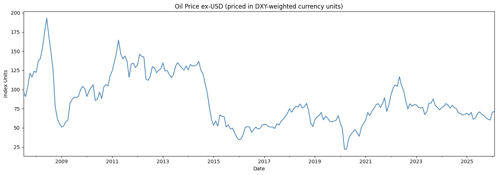
No big surprises here. Oil from a world-ex-USD perspective looks very similar to the dollar-only perspective.
Concluding remarks#
Although WTI has more desirable petrochemical properties than Brent oil, our analysis reveals that Brent is preferable over WTI in the context of a financial portfolio — denominated in practically any currency.
Before taking a position in oil, carefully evaluate the Brent over WTI spread (BoW).
Caveats#
A complete analysis would include the impact of shale oil and alternate energy sources.
As electric vehicles become more popular, demand for petroleum will diminish.
Be attentive to offshore storage of crude oil on inactive tanker ships.